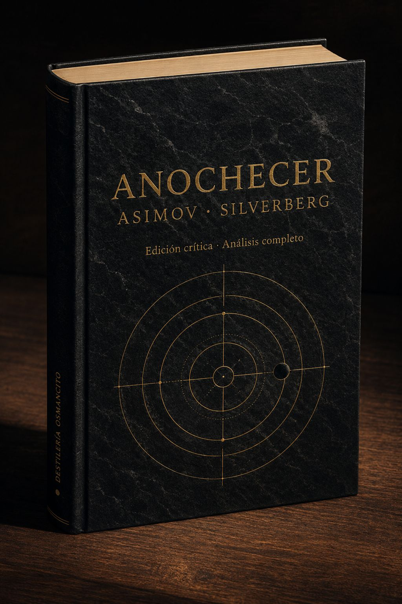

Anochecer llega como un peso gravitacional: novela de ciencia ficción que promete catástrofe cósmica y entrega, en cambio, un estudio de la mente humana ante lo que no puede procesar. La palabra más frecuente del corpus no es “estrellas” ni “oscuridad” sino el nombre de un periodista —Theremon— y eso lo dice todo: el apocalipsis aquí es siempre interior antes de ser exterior. Lo que perdura después de cerrar el libro no es la imagen de miles de soles apagándose, sino algo más inquietante y doméstico: la sospecha de que la cordura es solo un hábito que depende de condiciones que damos por eternas.
Un libro pesado y nervioso llega con el olor de papel de edición de bolsillo y la temperatura de algo que ha esperado mucho tiempo a ser abierto.
Anochecer entra sin pedir permiso. Trae consigo la densidad de una novela que sabe exactamente lo que quiere hacer: poner a la civilización al borde de un eclipse y observar cómo se comporta la razón cuando pierde el suelo bajo los pies. No es un texto silencioso — tiene el pulso acelerado de quien cuenta algo urgente — pero debajo de esa urgencia narrativa hay una pregunta que no se formula jamás de forma directa: ¿qué queda de nosotros cuando desaparece lo que siempre hemos dado por cierto? Nombrar lo que es este corpus no es decir que es una novela de ciencia ficción sobre un eclipse. Es decir que es una disección de la fragilidad constitutiva de la razón humana, construida como aventura.
Título — Anochecer (Nightfall) Autor — Isaac Asimov y Robert Silverberg Año — 1990 (novela); basada en el relato de Asimov de 1941 Género — Novela de ciencia ficción Extensión estimada — ~125.600 palabras · ~502 páginas · 3 partes (Atardecer, Anochecer, Amanecer) · 44 capítulos numerados Idioma original — Inglés Palabra más frecuente con contenido — theremon (690 ocurrencias). El corpus declara ser sobre el fin de la civilización y la aparición de las estrellas; su palabra más frecuente es el nombre de un periodista escéptico. Esa discrepancia expone el verdadero núcleo del libro: no el evento cósmico, sino la conciencia que lo atestigua y lo registra.
En el planeta Kalgash —iluminado permanentemente por seis soles— un grupo de científicos predice con certeza matemática un eclipse total, el primero en dos mil años. La oscuridad que caerá durará pocas horas, pero será suficiente para que la población entera pierda la razón y destruya la civilización: ya ha ocurrido antes, una y otra vez, y los registros arqueológicos lo confirman. La novela sigue a estos personajes durante las horas previas al eclipse, durante su desarrollo y en el caos posterior, mientras una secta religiosa —los Apóstoles de la Llama— aguarda el mismo evento como confirmación profética y como oportunidad de poder.
Theremon 762 — Periodista escéptico de Ciudad de Saro; columna de opinión, escepticismo público, arco de conversión. Beenay 25 — Astrónomo joven; descubridor clave de la predicción del eclipse. Athor 77 — Astrónomo eminente, anciano, autor del modelo matemático central. Siferra 89 — Arqueóloga; ha excavado los ciclos anteriores de destrucción civilizatoria. Sheerin 501 — Psicólogo; experto en el efecto de la oscuridad sobre la mente. Folimun 66 — Líder de los Apóstoles de la Llama; antagonista ambiguo.
En Kalgash no existe la noche: seis soles garantizan iluminación perpetua y la oscuridad es desconocida como experiencia. Los astrónomos de la Universidad de Saro descubren que cada dos mil años se produce un eclipse total coincidente con la posición orbital de la única luna visible, y que ese evento desencadena de forma sistemática la destrucción completa de la civilización. La arqueóloga Siferra confirma independientemente el ciclo al excavar capas de ruinas superpuestas en Beklimot. El corpus sigue a Theremon —periodista que viaja al observatorio a cubrir el evento como escéptico— y su gradual convencimiento de que la amenaza es real. El eclipse llega al final de la segunda parte: la oscuridad súbita, la aparición de miles de estrellas nunca vistas, y la consiguiente locura colectiva que incendia las ciudades. La tercera parte narra el amanecer sobre un mundo en escombros, donde los supervivientes racionales deben decidir si aliarse con los Apóstoles —la única organización con estructura y recursos— para reconstruir. La novela termina con los soles volviendo y el ciclo cerrándose, sin garantía de que esta vez el desenlace será diferente.
Primer contacto: el corpus produce una presión constante y bien calibrada —no angustia, sino anticipación racional creciente— que imita con precisión la experiencia que describe: saber que algo terrible viene y ser incapaz de detenerlo aunque se comprenda perfectamente. El texto es fluido, de lectura rápida, con la artesanía visible de Silverberg dando cuerpo a las ideas de Asimov. Su temperatura emocional no es el horror sino algo más seco y más frío: la demostración clínica. Hay dignidad en esa sequedad. Y también, en sus mejores momentos, una melancolía genuina: la de quien registra que la inteligencia no basta.
Razón vs. instinto ante lo inconceptualizable. El corpus pregunta si la mente racional puede prepararse para una experiencia que excede todo marco conceptual previo. Theremon sabe lo que viene; eso no lo protege. La preparación intelectual y el colapso emocional coexisten sin resolverse.
El ciclo como condena vs. el ciclo como posibilidad de ruptura. La civilización ha sido destruida y reconstruida incontables veces. ¿Es el conocimiento del ciclo suficiente para romperlo esta vez, o el ciclo es el verdadero protagonista y los personajes apenas sus instancias repetidas?
La fe como supervivencia vs. la razón como dignidad. Los Apóstoles sobreviven mejor al caos porque tienen estructura dogmática, disciplina y propósito. Los científicos sobreviven con más integridad pero menos poder. La novela nunca resuelve cuál de los dos tiene razón sobre cómo se reconstruye un mundo.
Eclipse sobre la razón
Un reloj de sol monumental en una plaza desierta, sus múltiples gnómons proyectando sombras en seis direcciones distintas — y una sola de ellas que empieza a desvanecerse, su sombra borrándose lentamente mientras las demás permanecen. Superficie de piedra labrada, desgastada por siglos de uso, con inscripciones matemáticas apenas legibles en el borde. La tensión visual: el orden perfecto del instrumento frente a la anomalía que lo hace inútil. Paleta de ocres cálidos, sienas quemados, un único punto de azul profundo donde debería estar la sombra ausente. En la esquina inferior, etiqueta discreta: DESTILERÍA OSMANCITO · ANOCHECER · ASIMOV-SILVERBERG. Grabado sobre piedra, estilo enciclopedia ilustrada del siglo XIX. Sin fotorrealismo. Relación de aspecto 2:3.La espera documentada
Un cuaderno de campo abierto sobre una mesa de observatorio, sus páginas cubiertas de cálculos y correcciones, manchas de café y anotaciones al margen cada vez más ilegibles a medida que se acercan al final. El cuaderno está abierto en la última página escrita: una fecha, una hora, y una sola oración interrumpida a mitad. Sobre la mesa, un lápiz partido. La ventana fuera del plano insinuada solo por la calidad de la luz que entra — una luz que no debería ser tan anaranjada a esa hora. Paleta de cremas, marfiles, un ocre rojizo invasivo que viene del exterior. En la esquina inferior, etiqueta discreta: DESTILERÍA OSMANCITO · ANOCHECER · ASIMOV-SILVERBERG. Acuarela con línea de tinta. Sin fotorrealismo. Relación de aspecto 2:3.El ciclo que no recuerda
Una estratigrafía arqueológica como corte vertical de tierra: capas de ceniza y reconstrucción superpuestas, perfectamente simétricas, repetidas siete veces de arriba a abajo. Cada capa tiene exactamente el mismo grosor, exactamente la misma composición de restos. En la capa más reciente, en la superficie, pequeñas figuras humanas irreconocibles realizan actividades cotidianas sin advertir el patrón debajo de sus pies. Sin horizonte. Sin cielo. Solo el corte y la repetición. Paleta de tierras: siena, umbra tostada, negro de humo, y un blanco casi luminoso en las capas de ceniza. En la esquina inferior, etiqueta discreta: DESTILERÍA OSMANCITO · ANOCHECER · ASIMOV-SILVERBERG. Gouache con textura de pastel seco. Sin fotorrealismo. Relación de aspecto 2:3.Umbral del conocimiento
El libro como objeto cerrado: volumen de tapa dura con cubierta de tela negra con vetas grises, como piedra pulida. En posición central y dominante, grabado en relieve dorado mate: ANOCHECER · ASIMOV — SILVERBERG. Debajo, en tipografía más pequeña pero igualmente grabada: Edición crítica · Análisis completo. El elemento visual de cubierta: un diagrama orbital preciso — líneas concéntricas y un punto oscuro en posición de tránsito exacto — que no ilustra el eclipse sino lo predice con la frialdad de una ecuación. Canto de las páginas visible: papel cremoso, levemente amarillento. La superficie descansa sobre una mesa de madera oscura con luz lateral que crea sombra larga. Paleta: negro profundo, oro mate, crema. DESTILERÍA OSMANCITO como colofón en lomo, tipografía pequeña vertical. Ilustración editorial de alta factura. Sin fotorrealismo. Relación de aspecto 2:3.El instrumento y la llama
El libro abierto en la página donde debería estar el eclipse — la bisagra exacta entre las partes DOS y TRES — junto a los instrumentos del análisis: una lupa de mango de ébano, notas marginales en papel de cuaderno, un fragmento de carboncillo como si alguien hubiera estado calculando. Un vaso con líquido ambarino en el borde del plano — la bebida de la nota de cata, la presencia humana que lee. La cubierta visible en el ángulo izquierdo lleva en posición dominante: ANOCHECER · ASIMOV — SILVERBERG · DESTILERÍA OSMANCITO. La página abierta no muestra texto legible — solo la mancha tipográfica como textura. Paleta: marfil, ámbar, negro de tinta, el ocre rojizo que reaparece de las imágenes de recepción. Óleo de pequeño formato, técnica flamenca. Sin fotorrealismo. Relación de aspecto 2:3.Anochecer es un continente narrativo casi sin tierra firme visible: todo argumento, teoría y ciencia ocurren dentro de escenas que tienen personajes, movimiento y consecuencia. El hallazgo más sorprendente del análisis es que la novela no narra el eclipse como su clímax central —lo narra como una pausa—: lo que ocurre verdaderamente son las docenas de decisiones individuales tomadas bajo presión, y el mundo que esas decisiones construyen en el caos posterior. Theremon no es el protagonista porque esté más cerca de las Estrellas sino porque es el último que capitula: su rendición final es la medida de todo lo que el libro ha demostrado.
[Caps. 1–2] — Sheerin entra al Túnel del Misterio
Qué ocurre — Sheerin, psicólogo convocado como consultor en Jonglor, decide cruzar él mismo el Túnel del Misterio para entender el trauma que estudia. Resiste quince minutos de oscuridad total, sale temblando y declara que el Túnel debe cerrarse definitivamente.
El giro — El hombre que teorizaba sobre el miedo a la oscuridad descubre que ninguna teoría lo protege: su comprensión intelectual del fenómeno no impide que casi se derrumbe dentro.
Intensidad — 4
[Cap. 2] — La tormenta de arena descubre la Colina de Thombo
Qué ocurre — Una tormenta de arena arrasa el yacimiento de Siferra en Beklimot. Cuando pasa, el viento ha abierto la Colina de Thombo y expuesto estratos de ciudades superpuestas, cada una separada de la anterior por una capa de cenizas. Siferra identifica el patrón.
El giro — Lo que parecía una catástrofe para la excavación resulta ser el mayor hallazgo arqueológico de la historia de Kalgash.
Intensidad — 3
[Cap. 4] — Beenay recibe confirmación del fallo orbital
Qué ocurre — Beenay pide a dos estudiantes (Faro y Yimot) que comprueben sus cálculos de forma independiente. Cuando les muestra los resultados, la desviación en la órbita de Kalgash se confirma: la Ley de la Gravitación Universal parece fallar. Beenay sale corriendo, llama a Theremon, casi se cae al llegar.
El giro — Los estudiantes llegan exactamente a la misma conclusión que Beenay, lo que elimina la última excusa para no creerla.
Intensidad — 4
[Caps. 7–8] — Beenay bebe por primera vez
Qué ocurre — Beenay, que nunca bebe, se reúne con Theremon en el Club de los Seis Soles y engulla tres copas en una hora intentando decirle que ha encontrado un error en la física del universo. En la tercera copa se cae de bruces al suelo.
El giro — No hay giro: el evento funciona como un barómetro emocional. Lo notable es que es el único momento de humor físico genuino del libro, y ocurre justo cuando la información que porta Beenay es más grave.
Intensidad — 3
[Cap. 9] — Beenay confiesa el fallo a Athor
Qué ocurre — Beenay entra al despacho de Athor con los cálculos que contradicen su teoría de la gravitación. Athor no se derrumba: escucha, piensa, y propone que quizás haya un cuerpo celeste desconocido, no que la teoría esté equivocada. Beenay se echa a reír histéricamente al reconocer la misma idea que él había descartado como absurda cuando Theremon la sugirió.
El giro — El maestro y el periodista ignorante llegan independientemente a la misma hipótesis del factor desconocido; Beenay, el científico de en medio, la había descartado.
Intensidad — 4
[Cap. 10] — Theremon entrevista a Folimun
Qué ocurre — Theremon va al cuartel general de los Apóstoles esperando entrevistar a Mondior. Le recibe Folimun, que resulta ser inteligente, calmado, casi racional. Le regala el Libro de las Revelaciones y cierra la puerta en su cara con elegancia.
El giro — Theremon sale de allí sabiendo menos que cuando entró, pero inquieto por primera vez ante la posibilidad de que los Apóstoles no sean completamente absurdos.
Intensidad — 3
[Caps. 14–16] — Athor descubre Kalgash Dos; Beenay y Faro calculan el eclipse
Qué ocurre — Athor, tras días sin dormir, completa el Postulado Ocho: hay un satélite invisible orbitando Kalgash que explica las perturbaciones orbitales. Mientras tanto, Beenay y Faro calculan independientemente que ese satélite puede eclipsar a Dovim exactamente cuando Dovim esté solo en el cielo, con una periodicidad de 2.049 años. La fecha coincide exactamente con la predicción de los Apóstoles.
El giro — La ciencia confirma la profecía religiosa. El momento en que Faro dice “Eclipse de Dovim por Kalgash Dos, periodicidad 2.049 años” es el punto más frío del libro.
Intensidad — 5
[Cap. 17] — La reunión de los cuatro: el diagnóstico del fin
Qué ocurre — Athor convoca a Sheerin, Beenay y Siferra. Sheerin diagnostica que la Oscuridad universal producirá una locura masiva. Siferra presenta las capas de fuego de Thombo con sus fechas de radiocarbono: cada incendio ocurrió 2.049 años después del anterior. Athor propone actuar. Es la primera vez que la catástrofe tiene testigos que la comprenden plenamente.
El giro — Siferra había querido mantener sus hallazgos en secreto para no darle credibilidad a los Apóstoles. Pero presentarlos aquí hace exactamente eso: su rigor científico termina siendo la prueba que más asusta.
Intensidad — 5
[Cap. 18] — Theremon llega al observatorio el día del eclipse
Qué ocurre — Theremon aparece en el observatorio el 19 de Theptar pese a estar explícitamente prohibido. Discute con Athor. Siferra interviene y lo acepta como su invitado. Theremon propone que, si todo falla, él puede manejar las relaciones públicas del desastre.
El giro — El hombre que pasó un año burlándose del eclipse llega el día del eclipse, sin poder mantenerse alejado.
Intensidad — 3
[Caps. 22–23] — Faro y Yimot describen su experimento fallido
Qué ocurre — Faro y Yimot llegan al observatorio con retraso, contando que construyeron una cámara oscura con agujeros en el techo para simular las Estrellas. El experimento no produjo ningún efecto perturbador.
El giro — Sheerin, que escucha, comprende de inmediato por qué no funcionó: los agujeros en un techo son arbitrarios. Las Estrellas reales son miles de soles reales apareciendo en un cielo que siempre ha tenido luz. La escala del shock es inconcebible para quien no la haya vivido.
Intensidad — 3
[Cap. 24] — Folimun irrumpe en el observatorio
Qué ocurre — Folimun entra sin invitación al observatorio el día del eclipse y exige que los científicos destruyan su equipo a cambio de protección. Athor se niega. Sheerin propone encerrarlo para que no vea las Estrellas y pierda el alma según su propia teología. Justo entonces Theremon señala la ventana: el eclipse ha comenzado.
El giro — La intrusión de Folimun, que debía ser amenazante, queda absorbida por el inicio del eclipse; el gran antagonista se convierte en un detalle menor cuando el verdadero evento empieza.
Intensidad — 4
[Cap. 27] — El eclipse total y las Estrellas
Qué ocurre — Dovim desaparece completamente. Las Estrellas irrumpen. Folimun colapsa. Theremon lucha con él para proteger las cámaras, pero las Estrellas lo derriban también. Athor, enloquecido, gesticula y grita. La turba entra. El observatorio es destruido.
El giro — Theremon el escéptico, el que creyó que podría resistirlo, también cae. No hay quien sea inmune.
Intensidad — 5
[Cap. 28] — Theremon despierta y reconstruye su nombre
Qué ocurre — Theremon recupera la conciencia en la ladera del monte del observatorio. Tarda varios minutos en recordar su nombre. Luego su número. Luego el nombre del periódico. La reconstrucción de la identidad ocurre como un lento inventario.
El giro — El hombre más cínico y verbal del libro tiene que enseñarse a sí mismo las palabras de nuevo. Su primera acción al recuperar la memoria es llamar a Siferra.
Intensidad — 4
[Cap. 29] — Sheerin emerge del sótano
Qué ocurre — Sheerin sale de su escondite en el sótano del observatorio al día siguiente. Encuentra el vestíbulo lleno de cadáveres y locos. Sale con Yimot. Yimot es apuñalado por una niña de diez años sin ningún motivo aparente. Sheerin sigue solo.
El giro — El escéptico superviviente es Sheerin, el que en teoría tenía más posibilidades de desmoronarse; el valiente Yimot, que miró las Estrellas y sobrevivió, muere por accidente días después.
Intensidad — 4
[Cap. 30] — Siferra mata a Balik
Qué ocurre — Siferra vuelve al laboratorio de arqueología a buscar sus mapas. Balik está allí, desquiciado, la manosea. Ella lo golpea con su palo, tres veces, hasta que deja de moverse.
El giro — El horror no es el acto en sí sino la calma con que Siferra lo realiza y registra. “Hoy he matado a un hombre”, piensa. Y luego: “Balik dejó de preocuparla.”
Intensidad — 5
[Caps. 34–35] — Siferra se une a la Patrulla Contra el Fuego
Qué ocurre — Siferra llega al Refugio de la universidad, que está ahora controlado por Altinol y su Patrulla Contra el Fuego. Altinol la obliga a desnudarse para registrarla. Ella obedece sin protestas visibles. Altinol la recluta.
El giro — La mujer más controlada e intocable del libro se desnuda ante desconocidos sin que le importe. “La modestia era un lujo que sólo podía permitirse la gente civilizada.”
Intensidad — 4
[Caps. 35–37] — Theremon y la pelea por el graben
Qué ocurre — Theremon lleva días en el bosque, hambriento. Consigue un graben muerto. Un grupo de fanáticos anti-fuego lo rodea, le arrebata el animal, le golpea. Siferra aparece con la Patrulla y le rescata.
El giro — Es el momento en que los dos se encuentran, contra toda probabilidad. La primera vez que Siferra usa su autoridad de la Patrulla es para salvar a Theremon, el hombre que pasó un año burlándose de sus investigaciones.
Intensidad — 3
[Caps. 37–38] — Theremon y Siferra se van juntos del Refugio
Qué ocurre — Theremon rechaza unirse a Altinol y pide a Siferra que venga con él a Amgando. Ella acepta. Apagan la luz. Por la mañana se marchan.
El giro — El rechazo al pequeño dictador eficiente y la alianza personal ocurren en la misma escena, sin separación narrativa. Theremon no argumenta ni seduce: simplemente pide.
Intensidad — 3
[Cap. 39 — Gran Autopista del Sur] — Theremon incendia la casa de los ocupantes
Qué ocurre — Unos ocupantes ilegales atrincherados en una casa disparan contra Theremon y Siferra desde el segundo piso. Theremon quema la casa con su pistola de aguja para que salgan. Funcionan. Escapan.
El giro — El periodista que durante un año ridiculizó la idea de la destrucción civilizatoria por el fuego está ahora usando el fuego para sobrevivir, con la misma tranquilidad que cualquier loco del bosque.
Intensidad — 4
[Caps. 41–42] — Captura por los Apóstoles; revelación de Mondior
Qué ocurre — Los Apóstoles capturan a Theremon en el campo. Folimun le recibe y le revela que Mondior no existe: es una síntesis electrónica creada por Bazret y mantenida por Folimun. Theremon pasa ocho horas hablando con él. Luego captura él mismo a Siferra cuando ella intenta infiltrarse en el campamento a rescatarle.
El giro — Theremon no ha sido liberado ni seducido: ha decidido. La revelación de Mondior no le convence de nada por sí misma; lo que le convence es ocho horas de conversación con alguien que parece el más racional de todos.
Intensidad — 4
[Cap. 44] — Cuatro soles; la alianza
Qué ocurre — Al amanecer, Siferra sale sola al claro. Theremon espera. Ella regresa. Acepta trabajar con Folimun, con una condición: no llevará el hábito. Theremon dice que lo arreglará.
El giro — El libro termina no con ningún triunfo ni tragedia, sino con un pacto pragmático y un pequeño detalle material —una prenda de ropa— como última línea de dignidad personal.
Intensidad — 3
Continente.
Las narraciones son el territorio principal de Anochecer: prácticamente todo el conocimiento científico, psicológico y arqueológico se entrega a través de escenas con movimiento, tensión y consecuencia. Hay discusiones teóricas extensas, sí, pero ocurren en mesas de bar, despachos bajo presión y callejones de autopistas destruidas, con personajes que sudan, beben de más, se pelean y se caen. El argumento nunca suspende la acción: el argumento es la acción. Las pocas páginas que se acercan al ensayo —el monólogo de Sheerin sobre la claustrofobia, la demostración de Athor sobre Kalgash Dos— están ancladas en escenas con espectadores, interrupciones, consecuencias emocionales inmediatas. No hay tierra árida en este libro.
La primera parte de Anochecer no acumula tensión hacia el eclipse: la construye en capas, como los propios estratos arqueológicos de Thombo. El hallazgo que no se esperaba es que el libro es más inteligente en sus capítulos pequeños que en los grandes: las joyas no están en los momentos de revelación científica sino en los instantes de fragilidad humana —el psicólogo que tira el control de interrupción, el astrónomo que pide que lo abracen, la arqueóloga que llora durante la tormenta de arena creyendo que su carrera ha terminado. La catástrofe cósmica se vuelve tolerable como concepto precisamente porque el corpus la ancla, siempre, en personas que tienen miedo a cosas concretas y pequeñas.
El nerviosismo sin causa Apertura — Sheerin llega a Jonglor en un glorioso día de cuatro soles y, sin razón aparente, se siente ansioso. Trayectoria — La conversación triangular con Kelaritan y el abogado Cubello despliega una esgrima de posiciones antes de que haya siquiera un objeto de disputa real. Cierre — La escena termina sin nada resuelto: sólo el acuerdo de ver a un paciente. La tensión inicial de Sheerin queda flotando, sin explicación. Temperatura — Premonición sorda.
Veredicto del capítulo — Capítulo de instalación: presenta el tono, los personajes y el contexto, pero su función principal es introducir el miedo a la Oscuridad como hecho previo a toda racionalización.
Sheerin llega a Jonglor bajo cuatro soles. Es psicólogo, hombre alegre por constitución; los días de cuatro soles deberían darle un impulso extra. Pero algo lo incomoda, y lo incomoda antes de que haya nada que lo justifique. El corpus hace aquí algo sutil: establece que la ansiedad precede al conocimiento del peligro, que el cuerpo sabe antes que la razón, que el miedo no es siempre una respuesta a la amenaza sino a veces una percepción más antigua. Todo lo que vendrá después —la demostración científica del eclipse, la prueba arqueológica de los ciclos— es, en cierto sentido, la razón que llega tarde a confirmar lo que algo en Sheerin ya supo al aterrizar.
El nerviosismo sin causa
Lo que el cuerpo sabe antes
Sheerin era básicamente una persona alegre; los días de cuatro soles le proporcionaban en general un impulso adicional. Pero hoy, por alguna razón, estaba nervioso y aprensivo, aunque hacía todo lo posible por impedir que eso se hiciera evidente. Después de todo, había sido llamado a Jonglor como experto en salud mental.
La excavación en peligro Apertura — Una tormenta de arena amenaza el yacimiento de Beklimot y la carrera de Siferra. Trayectoria — Siferra pasa de la acción frenética a la aceptación fatalista a la espera en el refugio. El interior del personaje se revela en el peor momento. Cierre — La tormenta pasa. Lo que parecía una catástrofe resulta ser el mayor descubrimiento de la historia. Temperatura — Catástrofe que muta en fortuna.
La desnudez ante el daño irremediable Apertura — Siferra comprende que ha dejado expuesto lo que no debía. Trayectoria — El interior del personaje se revela: no teme morir tanto como teme la vergüenza profesional eterna. Cierre — El pensamiento se interrumpe con la llegada del alivio. Temperatura — Lucidez amarga.
Veredicto del capítulo — Capítulo que introduce a Siferra y establece el descubrimiento de Thombo. Funciona también como espejo invertido del libro entero: la catástrofe que no ocurrió aquí prefigura la que sí ocurrirá.
Siferra es el personaje más controlado del libro, y el corpus la introduce en el peor momento posible: llorando. Ahí está la clave. No llora de miedo a morir sino de vergüenza anticipada: se imagina ya en los libros de arqueología de cincuenta años futuros como la científica que destruyó Beklimot por negligencia. La catástrofe profesional le pesa más que la personal. Eso dice más sobre ella que cualquier descripción directa. Y entonces la tormenta pasa, el viento raspa la Colina de Thombo, y lo que estaba enterrado aparece; la ruina se convierte en hallazgo. El ciclo de destrucción y resurrección que va a dominar el libro entero ocurre aquí por primera vez, en miniatura, en la carrera de una arqueóloga.
La desnudez ante el daño irremediable
Lo que vale más que la vida
Beklimot, el más famoso yacimiento arqueológico del mundo, iba a ser destruido como resultado de su negligencia. Generaciones de los más grandes arqueólogos de Kalgash habían trabajado allí desde su descubrimiento: primero Galdo 221, el más grande de todos, y luego Marpin, Stinnupad, Shelbik, Numoin, toda la gloriosa lista. Y ahora Siferra, que había dejado todo el lugar estúpidamente desprotegido mientras la tormenta de arena se acercaba.
Es mejor, pensó Siferra, que yo no sobreviva a esto. Al menos no tendré que leer lo que van a decir acerca de mí en todos los libros de arqueología que se publiquen en los próximos cincuenta años.
La catástrofe que muta
El viento que abre la historia
Un estremecimiento recorrió la espina dorsal de Siferra. Se volvió hacia Balik y vio que él estaba tan sorprendido como ella. Tenía los ojos muy abiertos, el rostro muy pálido.
—¡En nombre de la Oscuridad! —murmuró roncamente—. ¿Qué es lo que tenemos aquí, Siferra?
—No estoy segura. Pero tengo intención de empezar a descubrirlo ahora mismo.
El hombre grande que se derrumba Apertura — Sheerin entrevista a Harrim, estibador de 50 años, esperando un paciente más robusto que los anteriores. Trayectoria — Harrim cuenta su historia con control creciente hasta que la palabra “Oscuridad” la quiebra. Cierre — Harrim colapsa en histeria. Una aguja. El silencio. Temperatura — Vergüenza y derrumbe.
El diagnóstico inverso Apertura — Kelaritan describe los síntomas: claustrofobia primero, claustrofilia después. Trayectoria — Sheerin, que debería estar por encima de todo esto, empieza a perder el apetito. Cierre — La última frase de Sheerin resuena: “Pobres diablos.” Hablando también de sí mismo. Temperatura — Contagio silencioso.
Veredicto del capítulo — Capítulo que establece el efecto de la Oscuridad sobre la mente sin argumentarlo: lo demuestra en carne viva.
Harrim no está loco de forma espectacular. Está loco de forma íntima: no puede salir del hospital porque cree que afuera está oscuro, aunque puede ver los soles por la ventana. La contradicción entre lo que ve y lo que cree no le perturba; simplemente cree a su miedo antes que a sus ojos. Sheerin, que estudia este tipo de cosas, llega al capítulo como experto y sale sin apetito. El corpus hace aquí una demostración muy eficiente: no necesita explicar qué hace la Oscuridad a la mente porque acaba de mostrarlo en el hombre más improbable del escenario, el más grande, el que “debería” resistir.
El hombre grande que se derrumba
El vocabulario del miedo
—La Oscuridad —dijo Harrim roncamente. Sus grandes manos se estremecieron ante el recuerdo—. Caía sobre ti como si hubieran dejado caer un sombrero gigante encima de tu cabeza. Y todo se volvió negro de pronto. Oí reír a mi hijo Trinit. Pensaba que la Oscuridad era algo sucio. De modo que se echó a reír, y yo le dije que se callara, y entonces una de mis hijas se puso a llorar un poco, y yo le dije que todo estaba bien, que no había nada de lo que preocuparse, que aquello iba a durar sólo quince minutos, y que ella debía considerarlo como un desafío, no algo de lo que asustarse. Y entonces…
Silencio.
—Entonces la sentí cerrarse sobre mí. La Oscuridad. Todo era Oscuridad… No puede imaginar usted lo que era… lo negro que era… la Oscuridad… la Oscuridad…
La cita imposible Apertura — Beenay ha prometido estar en dos lugares a la vez: con Raissta y con Faro y Yimot. Trayectoria — El conflicto doméstico resulta ser el envoltorio de una crisis científica. Beenay negocia con Raissta sin poder decirle por qué la reunión con los estudiantes es urgente. Cierre — Beenay escapa. Raissta no sabe qué acaba de perder. Temperatura — Urgencia disfrazada de cotidianidad.
La anomalía que no puede ser Apertura — Beenay explica a Raissta que la Ley de la Gravitación Universal podría estar equivocada. Trayectoria — Raissta no lo comprende. Beenay no puede esperar a que lo comprenda. Cierre — “¿Y si la Ley de la Gravitación Universal es errónea?” La pregunta queda sin respuesta mientras Beenay sale corriendo. Temperatura — Abismo que se abre bajo los pies.
Veredicto del capítulo — Capítulo que instala la amenaza científica y establece la pareja Beenay-Raissta como contrapeso afectivo que el libro irá abandonando.
Beenay tiene una anomalía en sus cálculos y no puede decírsela a la mujer con quien vive porque no sabe cómo empezar. No es que no quiera; es que la distancia entre “tengo un error en mi órbita” y “la ley fundamental que rige el universo está mal” es tan grande que no cabe en una conversación casual. El corpus hace aquí algo característico: usa el conflicto de horarios entre dos amantes para revelar el estado interior de un científico en crisis. Lo que parece una pelea menor sobre una tarde libre es en realidad la primera grieta entre Beenay y el mundo ordenado que habitaba.
Este capítulo no produce joyas. Construye andamiaje necesario —la introducción de Beenay, su vida con Raissta, la naturaleza de su descubrimiento— con eficiencia pero sin momentos que cristalicen solos. La joya está en el capítulo siguiente.
La arqueóloga que no puede parar Apertura — Siferra trepa la Colina de Thombo a golpe de pico, antes de fotografiar nada, antes de documentar nada. Trayectoria — Balik protesta. Siferra lo ignora. Luego se une a ella. Cierre — Dos arqueólogos trabajando sin protocolo, descubriendo capas y capas de ciudades quemadas. El hallazgo se abre hacia abajo indefinidamente. Temperatura — Fiebre.
Veredicto del capítulo — Capítulo de transición que completa el descubrimiento de Thombo iniciado en el cap. 2. Establece el patrón de incendios, que no será comprendido hasta mucho más tarde.
Capítulo de transición. Lo que importa para el corpus entero ocurre en una sola línea, casi de pasada: “¿Ves lo que veo yo? / Otro poblado, sí. Pero, ¿qué tipo de arquitectura es ésta? / Es nuevo para mí. / Y para mí también.” Dos expertos que no reconocen lo que tienen delante. Todo lo que el libro probará más tarde —que la historia tiene más capas de las que nadie suponía, que el pasado entierra el pasado y el pasado entierra el pasado— está contenido en ese pequeño no reconocimiento.
La arqueóloga que no puede parar
El permiso de los muertos
Siferra sabía que cortar de aquel modo no era la mejor de las técnicas. Su mentor, el gran viejo Shelbik, se estaría probablemente agitando en su tumba. Y el fundador de su ciencia, el reverenciado Galdo 221, debía de estar mirando sin duda hacia abajo desde su exaltado lugar en el panteón de los arqueólogos y sacudiendo tristemente la cabeza.
Por otro lado, Shelbik y Galdo habían tenido la oportunidad de poner al descubierto lo que había en la Colina de Thombo, y no la habían aprovechado. Si ella se sentía un poco demasiado excitada ahora, con una prisa ligeramente excesiva en su ataque, bueno, simplemente tendrían que perdonarla.
El psicólogo ante el Túnel Apertura — Sheerin se prepara mentalmente para cruzar el Túnel del Misterio. Trayectoria — Se razona a sí mismo desde el miedo hacia una serenidad que no siente. La lista de argumentos crece exactamente en proporción a la ansiedad que intenta suprimir. Cierre — Sheerin cruza el Túnel, casi pierde la cordura, sale temblando, y declara con autoridad que debe cerrarse para siempre.
El control de interrupción Apertura — Le dan a Sheerin un botón de emergencia. Lo acepta condescendientemente. Trayectoria — Dentro del Túnel, decide no usarlo. Luego lo lanza contra la oscuridad. Cierre — Sale sin él. Nadie pregunta dónde está. Temperatura — Orgullo que cede.
Veredicto del capítulo — El capítulo más rico de la primera parte. Sheerin entra como experto y sale como prueba de su propia tesis. Es el capítulo bisagra entre el mundo que racionaliza la Oscuridad y el mundo que la ha sufrido.
Sheerin es el hombre que más sabe sobre el efecto de la Oscuridad en la mente humana, y eso no le sirve de nada. Su comprensión intelectual del fenómeno es perfecta; su resistencia a él, exactamente la misma que la de cualquiera. Lo más revelador del capítulo no es el derrumbe dentro del Túnel sino el momento previo, cuando Sheerin enumera las razones por las que estará bien: menos de uno de cada diez; soy una persona muy estable; comprendo el síndrome; la comprensión protege. Cada argumento es verdadero y completamente inútil. El corpus demuestra aquí que el conocimiento no es inmunidad, que el experto es tan vulnerable al hecho como el ignorante, y que la única diferencia es que el experto tiene más vocabulario para describir cómo se derrumba.
El control de interrupción
Lanzarlo
Interrumpe interrumpe interrumpe interrumpe
No. Absolutamente no.
Permaneció sentado muy erguido, la espalda rígida, los ojos muy abiertos, mirando impasible a la nada en la que se hundía. Adelante y adelante, cada vez más profundo. Temores primordiales burbujearon y sisearon en las profundidades de su alma, y los obligó a sepultarse de nuevo, muy abajo y muy lejos.
De pronto, sorprendentemente, lanzó el control de interrupción contra la oscuridad. Hubo un diminuto sonido cuando cayó en alguna parte. Luego silencio de nuevo. Notó su mano terriblemente vacía.
El psicólogo ante el Túnel
Menos de uno de cada diez
Menos de uno de cada diez de todos aquellos que habían cruzado el Túnel del Misterio habían salido de él mostrando algún síntoma de alteración emocional. Y esa gente tenía que haber sido vulnerable de alguna manera especial. Precisamente debido a que estaba tan cuerdo, se dijo a sí mismo, debido a que estaba tan bien equilibrado, no tenía nada que temer.
Nada…
que…
temer…
Siguió repitiéndose esas palabras hasta que se sintió casi tranquilo.
La opinión del experto
—Es imposible que nadie pase a través de esa cosa sin hallarse en un grave riesgo. Ahora estoy seguro de ello. Incluso la psique más fuerte recibirá un terrible vapuleo, y las débiles simplemente se derrumbarán. Si abren el Túnel de nuevo, tendrán todos los hospitales mentales de cuatro provincias llenos dentro de seis meses.
—Al contrario, doctor…
—¡No me diga “al contrario”! ¿Ha estado usted en el Túnel, Cubello? No, no lo creo. Pero yo sí. Usted paga por mi opinión profesional: puede conseguirla ahora mismo. El Túnel es mortífero. ¡Ciérrenlo definitivamente! ¡En nombre de la cordura, hombre, ciérrenlo!
El encuentro de los mundos Apertura — Beenay llega al observatorio y se encuentra inesperadamente con Theremon. Trayectoria — Theremon necesita una cita para su artículo; Beenay tiene la mente en otro lugar. La conversación transcurre en dos niveles: lo que se dice (calendario, artículo) y lo que no se dice (catástrofe inminente). Cierre — Theremon baja las escaleras sin saber nada. Beenay entra al observatorio a ver a Faro y Yimot. Temperatura — Dos mundos que aún no se han encontrado.
Beenay ante la Sala de Mapas Apertura — Beenay repasa los cálculos de sus estudiantes, esperando un error que no aparece. Trayectoria — Las hojas confirman lo que esperaba que desmintieran. Las manos tiemblan. Los papeles caen. Cierre — Beenay sale corriendo por la escalera de incendios y llama a Theremon. Temperatura — El suelo que cede.
Veredicto del capítulo — Capítulo que confirma la anomalía científica y presenta a Theremon como el confidente improbable de Beenay.
Beenay pasa por delante del manuscrito de Athor en las vitrinas del observatorio y piensa en algo “muy parecido a una plegaria”. Ese detalle es más preciso que cualquier declaración: un científico que reza ante el objeto de su fe porque acaba de encontrar algo que podría destruirla. Luego los cálculos de Faro y Yimot confirman los suyos, los papeles caen al suelo, y Beenay huye por la escalera de incendios “como un ladrón” para no encontrarse con Athor. La evasión física de quien debería dar la cara es la primera de muchas huidas en este libro: lo que la gente no puede decir, lo dice con los pies.
Beenay ante la Sala de Mapas
El pie equivocado
Sus manos temblaban tan fuertemente que las hojas empezaron a aletear entre sus dedos. Fue a depositarlas sobre la mesa ante él, pero su muñeca se agitó incontroladamente y las envió dispersas al suelo. Faro se arrodilló para recogerlas. Miró a Beenay de una forma turbada.
—Señor, si le hemos trastornado de alguna manera…
—No. No, en absoluto. Hoy no he dormido bien, ése es el problema. Pero habéis hecho un trabajo excelente, incuestionablemente espléndido. Tomar un problema como éste que no tiene ninguna resonancia en absoluto en el mundo real y seguirlo tan metódicamente hasta la conclusión requerida por los datos, ignorando con éxito el hecho de que la premisa inicial es absurda… bueno, es un trabajo estupendo, una admirable demostración de vuestros poderes de lógica, un experimento mental de primer orden…
Les vio intercambiar rápidas miradas. Se preguntó si realmente les estaba engañando.
El ladrón en la escalera
Abandonó el observatorio por la parte de atrás, utilizando la escalera de incendios como un ladrón. No quería arriesgarse a encontrar a Athor si iba por la parte delantera. Le resultaba abrumador considerar la posibilidad de ver a Athor ahora, enfrentarse a él cara a cara, hombre a hombre.
Beenay bebe Apertura — Theremon llega al Club de los Seis Soles esperando a un Beenay en crisis. Beenay llega y pide un Tano Especial. Trayectoria — Beenay engulla tres copas mientras construye el relato de su descubrimiento. La bebida y la historia se administran al mismo ritmo: cuanto más cuenta, más bebe. Cierre — Beenay pronuncia su declaración sobre la ciencia, la memoriza en voz alta, y se cae de bruces al suelo. Temperatura — Gravedad cómica.
El consejo del periodista Apertura — Theremon intenta que Beenay vea el problema de Athor con perspectiva. Trayectoria — Theremon da, sin quererlo, exactamente la misma idea que Athor dará más tarde: que quizás haya un factor desconocido. Cierre — Beenay se ríe de la idea. Luego se cae. Temperatura — La verdad dicha por quien menos sabe.
Veredicto del capítulo — Capítulo que une a Beenay y Theremon como pareja complementaria: el científico y el comunicador. Funciona como alivio cómico antes de la escalada.
Theremon da la solución correcta por las razones equivocadas y Beenay la descarta con exactamente los argumentos que después no servirán. El periodista —“sólo un lego en esas materias”— intuye la hipótesis del factor desconocido porque no está condicionado por el edificio teórico que hay que proteger. Beenay la rechaza porque protegerla es lo único que sabe hacer. El capítulo termina con Beenay en el suelo, lo que es una forma perfectamente honesta de mostrar el estado de una mente que ha comprendido algo insoportable y no sabe cómo colocarlo en ningún lugar.
El consejo del periodista
La idea del lego
—Por supuesto, hay otra posibilidad. Yo sólo soy un lego en esas materias, ya sabes, y es muy probable que te eches a reír. ¿Es posible que la Teoría de la Gravitación sea correcta pese a todo, y que las cifras del ordenador para la órbita de Kalgash sean también correctas, y que algún otro factor completamente distinto, algo hasta ahora desconocido, pueda ser el responsable de la discrepancia en los resultados?
—Supongo que podría ser —dijo Beenay, con voz llana y desanimada—. Pero, una vez empiezas a hurgar en misteriosos factores desconocidos, empiezas a moverte en el reino de la fantasía. ¿Quieres decir que hay un séptimo sol invisible ahí fuera? ¿Por qué no cinco soles invisibles? ¿Por qué no un gigante invisible que tire de los planetas a su alrededor según sus caprichos? ¿Por qué no un enorme dragón cuyo aliento desvíe Kalgash de su órbita correspondiente? Cuando empiezas con los por qué no, Theremon, todo se vuelve posible, y luego nada tiene ningún sentido.
Beenay bebe
La declaración y la caída
Beenay repitió toda la declaración palabra por palabra, como si la hubiera memorizado unas horas antes.
Luego vació su tercera copa en un solo y sorprendentemente largo sorbo.
Y luego se puso en pie, sonrió por primera vez en toda la tarde, y se derrumbó de bruces al suelo.
Athor recibe la mala noticia Apertura — Beenay entra al despacho de Athor con los cálculos que invalidan su teoría. Athor los lee en silencio. Trayectoria — Beenay espera la reacción. Athor piensa. Luego le reprocha que haya tardado tanto en venir. Cierre — Athor propone la hipótesis del factor desconocido. Beenay explota en carcajadas: acaba de escuchar a Athor decir exactamente lo que él le dijo a Theremon que era imposible. Temperatura — Inversión.
La furia correcta Apertura — Beenay se disculpa anticipadamente por haber venido. Trayectoria — Athor le interrumpe: está furioso no por el descubrimiento sino porque Beenay tardó. Cierre — Athor le enseña a amar la verdad más que la teoría. Temperatura — Magisterio.
Veredicto del capítulo — Capítulo bisagra: cierra el arco del descubrimiento y abre el arco de la solución. Establece el carácter de Athor con más exactitud que cualquier descripción.
La furia de Athor apunta hacia donde no se esperaba. Beenay venía preparado para ser destrozado por haber invalidado la teoría de su mentor; lo que recibe es una reprimenda por haber tardado. Athor le dice, sin adornos, que el amor a la verdad es superior al amor a la propia teoría, y que un maestro que no puede recibir eso de su mejor alumno no merece el nombre. Es uno de los momentos más limpios del libro: un viejo que acaba de recibir la peor noticia de su carrera y lo primero que hace es enseñar.
La furia correcta
Furioso por lo que no esperaba
—Estoy furioso contigo, sí. Pero no por la razón que tú piensas.
—¿Señor?
—Número uno, estoy irritado por la forma en que no dejas de balbucearme, cuando todo lo que deseo hacer es permanecer sentado aquí y elaborar tranquilamente las implicaciones de estos papeles que acabas de echar sobre mi mesa. Número dos, y mucho más importante, me siento absolutamente ultrajado por el hecho de que hayas vacilado un solo momento antes de traerme tus descubrimientos. ¿Por qué esperaste tanto?
El amor a la teoría
—Dime, hombre, ¿piensas que estoy tan enamorado de mi hermosa teoría que deseo que uno de mis más dotados asociados me proteja de la desagradable noticia de que la teoría tiene un fallo?
—No, señor. Por supuesto que no.
—Entonces, ¿por qué no viniste corriendo aquí con la noticia en el momento mismo en que estuviste seguro de que tenías razón?
El factor desconocido
El dragón que Athor inventa
La expresión de Beenay se volvió radiante.
—¡Entonces no he invalidado la Gravitación Universal después de todo!
—Todavía no, al menos. Probablemente te has ganado un lugar en la historia científica, pero todavía no sabemos si es como invalidador o como originador. Recemos para que sea lo último.
Beenay luchó por recuperar el autocontrol. Los músculos se agitaron en su rostro; se volvió por un instante, y cuando se volvió de nuevo era otra vez casi él mismo. Avergonzado, dijo:
—Tomé un par de copas con Theremon 762 ayer por la tarde, y me propuso exactamente lo mismo que acaba de decirme usted, señor: que quizá hubiera algún factor desconocido. Y yo me eché a reír.
Theremon visita a los Apóstoles Apertura — Theremon va al cuartel general de los Apóstoles esperando a Mondior. Le recibe Folimun. Trayectoria — La conversación avanza por los meandros del dogma religioso y Theremon intenta en cada momento encontrar la grieta lógica. No la encuentra. Cierre — Folimun le regala el Libro de las Revelaciones y cierra la puerta. Theremon sale sabiendo menos que antes y más inquieto. Temperatura — Racionalidad perturbadora.
El retrato que se ilumina Apertura — Theremon entra a una sala de espera donde el retrato de Mondior parece cobrar vida. Trayectoria — Theremon se advierte a sí mismo que permanezca en guardia. Cierre — Recibe a Folimun en lugar de a Mondior. El retrato era sólo una preparación. Temperatura — Advertencia al lector.
Veredicto del capítulo — Capítulo que presenta a los Apóstoles como algo más complejo que una secta absurda. Folimun es el antagonista más inteligente del libro: razona, tiene humor, no desvaría.
Folimun dice las cosas más absurdas con el tono de quien habla de inversiones financieras. Theremon, que tiene oficio de detectar fraudes y fanáticos, no puede etiquetarlo. Eso es lo que perturba: no la predicción del apocalipsis sino la manera como se anuncia, sin desmesura, casi con cortesía. El contraste entre lo que Folimun dice y la forma en que lo dice establece una duda que el corpus no resolverá fácilmente. La escena termina con una frase que es, en retrospectiva, la más honesta del capítulo: “Sospecho que llegará un momento en el que usted y yo nos busquemos el uno al otro.”
Theremon visita a los Apóstoles
El hombre que no parece loco
Lo más curioso, pensó Theremon, era que Folimun no parecía en absoluto loco.
Excepto por su extraño hábito, hubiera podido ser cualquier tipo de joven hombre de negocios sentado en su atractiva oficina: un agente de préstamos, por ejemplo, o un especialista en inversiones. Era a todas luces inteligente. Hablaba con claridad y bien, con un tono seguro y directo. Nunca desvariaba o desbarraba. Pero las cosas que decía, de aquella manera segura y directa, eran los más alocados balbuceos carentes de sentido.
El contraste entre lo que Folimun decía y la forma en que lo decía resultaba difícil de aceptar.
Lo que Folimun sabe sobre Theremon
—¿De veras lo ha sido? ¿Perder media hora hablando con un loco? ¿Un chiflado? ¿Un fanático? ¿Un cultista?
—No recuerdo haber usado esas palabras.
—No me sorprendería que me dijeran que las había pensado, sin embargo. —El Apóstol ofreció a Theremon otra de sus curiosamente desarmantes sonrisas—. Tendría razón a medias. Soy un fanático. Y un cultista, supongo. Pero no un loco. Ni un chiflado. Aunque me gustaría serlo. Y a usted también.
Sheerin vuelve bajo la lluvia Apertura — Sheerin regresa a Ciudad de Saro. Llueve. El día es “desagradablemente oscuro”. Trayectoria — Liliath le recoge. Sheerin miente sobre cómo estuvo en el Túnel. Luego casi lo dice. Cierre — Sheerin llega a casa sin apetito. No puede decir que tiene hambre aunque intenta comer. Temperatura — Secuela silenciosa.
Veredicto del capítulo — Capítulo de transición que muestra las secuelas del Túnel en Sheerin sin nombrarlas directamente. Funciona como barómetro interior del personaje.
Capítulo de transición. Sheerin ha cruzado el Túnel y ahora el día nublado de vuelta a casa le produce una inquietud que no admite ante nadie, incluyendo Liliath, a quien le cuenta la historia del Túnel en pasado y en tercera persona (“los pacientes”, “esa gente”) como si él no hubiera sido también una víctima. El detalle que lo delata es el más sencillo: come por compromiso cuando lo invitan, él, Sheerin, que nunca dejó de tener hambre. El corpus no necesita decir más.
El día oscuro
Sin hambre
Durante tres o cuatro días después, Sheerin experimentó un roce, sólo un roce, del tipo de claustrofobia que había enviado a tantos ciudadanos de Jonglor al hospital mental. Estaba en su habitación del hotel, trabajando en su informe, cuando de pronto sentía la Oscuridad cerrarse sobre él, y le era necesario levantarse y salir a la terraza, o incluso abandonar completamente el edificio para dar un largo paseo por los jardines del hotel.
Necesario. Bueno, quizá no. Pero preferible. Ciertamente preferible.
La lluvia que Siferra ama Apertura — Siferra regresa a la Universidad de Saro tras dieciocho meses en el desierto. Llueve. Trayectoria — El capítulo avanza por dos líneas paralelas: las tablillas de Thombo y la insinuación de Balik. Cierre — Balik se va. Mudrin se lleva las tablillas. Siferra queda sola con sus mapas. Temperatura — Tensión doméstica mal encauzada.
Balik se insinúa Apertura — Balik propone unas “pequeñas vacaciones” a Siferra. Trayectoria — Siferra lo rechaza con dureza. Balik se humilla. El pasaje entra en el rango de lo incómodo. Cierre — Mudrin interrumpe. La tensión se disuelve sin resolverse. Temperatura — El malentendido que daña.
Veredicto del capítulo — Capítulo de construcción de personaje. Establece a Siferra como figura hermética y a Balik como figura destinada a complicarse. Las tablillas de Mudrin importarán más tarde.
Capítulo de transición. El hallazgo más útil no está en la trama sino en un detalle de caracterización: Siferra fantasea con correr desnuda bajo la lluvia por el campus y luego se dice a sí misma que “no es en absoluto su estilo”. Lo que sigue —el rechazo frío de Balik, la posesión celosa de las tablillas— confirma ese diagnóstico. Siferra es alguien que tiene impulsos y los cancela antes de que aparezcan. El libro irá desmantelando esa contención, capa por capa, igual que ella desmantela la Colina de Thombo.
Este capítulo no produce joyas. Tiene momentos de interés psicológico —el sueño de Siferra bajo la lluvia, el rechazo a Balik— pero ninguno que funcione completamente solo, fuera de contexto.
La charla en el Club Apertura — Beenay cuenta a Theremon cómo fue con Athor. Sheerin llega. Trayectoria — Los tres conversan sobre la Gravitación Universal, Jonglor, los Apóstoles. Se mezclan tres registros: humor, ciencia popular, duda emergente. Cierre — Sheerin pregunta “¿Y si hay algo de verdad en ello?” La mesa queda en silencio. Temperatura — La primera grieta en el escepticismo colectivo.
Veredicto del capítulo — Capítulo de confluencia: reúne a los tres personajes centrales de la primera mitad por primera vez. La función del capítulo es instalar la duda compartida.
Capítulo de transición que tiene, sin embargo, su momento más preciso en la última frase. Sheerin —el psicólogo que cruzó el Túnel, el que sabe más que nadie lo que la Oscuridad hace— pregunta “¿Y si hay algo de verdad en ello?” sobre las predicciones de los Apóstoles. Es la primera vez que alguien en el libro lo pregunta en serio. Lo que hace el corpus con esa pregunta es exactamente lo correcto: la deja sin respuesta, corta el capítulo y deja que el silencio trabaje.
La primera grieta
Y si
—La locura no es lo peor de ello —dijo Theremon—. Según Folimun, el cielo se llenará con algo llamado Estrellas que lanzarán fuego sobre nosotros y lo incendiarán todo. Y ahí estaremos nosotros, un mundo lleno de tambaleantes maníacos, vagando de un lado para otro en ciudades que arderán en torno a nuestras orejas. Gracias al cielo, esto no es más que el mal sueño de Mondior.
—¿Y si no lo es? —dijo Sheerin, de pronto muy serio. Su redondo rostro se alargó, pensativo—. ¿Y si hay algo de verdad en ello?
—Vaya idea sorprendente —dijo Beenay—. Creo que esto exige otra copa.
Athor busca el Postulado Ocho Apertura — Athor lleva días sin dormir, trabajando en la hipótesis del satélite invisible. Trayectoria — Los siete postulados anteriores han fallado. El octavo empieza a funcionar. Athor teclea con manos temblorosas. Cierre — Las dos órbitas convergen en una sola línea naranja. Athor llama a todos. Anuncia el hallazgo y se va a casa. Temperatura — Exultación agotada.
Las manos que tiemblan Apertura — Yimot le trae las cifras. Ve las manos de Athor temblar sin control. Trayectoria — Athor ignora el temblor y sigue tecleando. Cierre — Ha llegado más allá de la fatiga. Temperatura — Voluntad contra el cuerpo.
Veredicto del capítulo — Capítulo que establece el Postulado Ocho y a Kalgash Dos. Es el descubrimiento más importante del libro y ocurre de madrugada, con un viejo solo y tembloroso.
El descubrimiento más importante del libro lo hace un hombre de casi setenta años que lleva tres días sin dormir con las manos que tiemblan tan violentamente que no puede recoger un papel. El corpus hace bien en no adornar esto: Athor teclea con errores, corrige cada uno, avanza. La imagen de la pantalla —dos órbitas que se funden en una sola línea naranja— es la resolución matemática de la crisis del libro entero, y llega en el momento de mayor agotamiento físico del personaje. Luego Athor se levanta, anuncia el hallazgo con la calma de quien ha terminado un trabajo, y dice que se va a casa a dormir. El corpus entiende que la grandeza no necesita ser dramática.
Las manos que tiemblan
Lo que no se puede controlar
La mano de Athor tembló violentamente cuando la tendió hacia las copias de impresora que Yimot le traía. Los dos la miraron, sorprendidos. Los largos y huesudos dedos eran pálidos como la muerte, y se estremecían con una vehemencia que ni siquiera Yimot, famoso por sus notables reacciones nerviosas, era capaz de igualar. Athor hizo un esfuerzo por detener su mano pero no lo consiguió. Lo mismo hubiera podido ordenar a Onos que girara a la inversa en el cielo.
Athor busca el Postulado Ocho
La única persona que puede hacer esto
Tú eres la única persona en el mundo que posiblemente puede hacer esto, se dijo mientras trabajaba. Así que debes hacerlo.
Sonaba estúpido a sus oídos, y locamente egocéntrico, y quizás un poco paranoico. Probablemente ni siquiera era cierto. Pero en este estadio de agotamiento no podía permitirse tomar en consideración ninguna otra premisa excepto la de su propia indispensabilidad.
La línea naranja
La brillante elipse roja que era la órbita original teórica osciló y cambió, y de pronto desapareció. Lo mismo le ocurrió a la amarilla. Ahora había una sola línea en la pantalla, de un intenso naranja profundo, con las dos simulaciones orbitales coincidiendo hasta la última cifra decimal.
Athor jadeó. Luego cerró los ojos y apoyó la cabeza contra el borde del escritorio. La elipse naranja brillaba como un anillo de llamas contra sus cerrados párpados.
Siferra le cuenta a Beenay Apertura — Siferra muestra a Beenay los mapas de Thombo y las primeras traducciones de las tablillas. Trayectoria — Los datos arqueológicos apuntan a ciclos de destrucción. Siferra teme que confirmen las predicciones de los Apóstoles. Cierre — Beenay se levanta de repente a mitad de la conversación y sale corriendo al observatorio. Temperatura — El momento en que todo encaja.
El miedo a ser usada Apertura — Siferra pide a Beenay que no le diga nada a Theremon. Trayectoria — Beenay promete. Pero su mente ya está en otra parte. Cierre — Siferra se queda sola con sus mapas y la frase de Beenay flotando: “¿La Oscuridad? ¿Es posible?” Temperatura — El hallazgo que asusta a quien lo hace.
Veredicto del capítulo — El capítulo donde las dos líneas del libro —la astronómica y la arqueológica— se tocan por primera vez en la misma habitación. Es el momento de mayor densidad informativa de la primera parte.
Beenay está sentado escuchando a Siferra y de pronto deja de escuchar. No es descortesía: es el momento en que los dos sistemas de datos —lo que él sabe del eclipse y lo que ella sabe de Thombo— se alinean en su cabeza y producen una conclusión que no puede decir en voz alta. Sale corriendo diciendo “te lo diré más tarde” y deja a Siferra con la sensación exacta que el lector tiene al cerrar ese capítulo: algo acaba de ocurrir que todavía no tiene nombre.
Siferra le cuenta a Beenay
Lo que tiene miedo de confirmar
—Ves ahora por qué te pedí que vinieras —dijo Siferra—. No puedo hablar de esto con nadie del departamento. Beenay, ¿qué voy a hacer? ¡Si algo de esto se hace público, Mondior 71 y su puñado de locos proclamarán desde los tejados que he descubierto firmes pruebas arqueológicas de sus absurdas teorías!
La Oscuridad
—¡La Oscuridad! —murmuró roncamente Beenay—. ¿Es posible?
Siferra había seguido hablando. Se detuvo a media frase ante su estallido.
—¿Me estás prestando atención, Beenay?
—Yo…, ¿qué? Oh. Oh. Escucha, Siferra, ¿crees que podríamos seguir hablando de esto en algún otro momento? Tengo que ir ahora mismo al observatorio.
—Está bien, no dejes que yo te detenga —dijo ella fríamente.
—Lo que me has contado es del mayor interés para mí, y de mucha importancia, de una tremenda importancia, más incluso de la que soy capaz de decir en este momento.
Beenay calcula la periodicidad Apertura — Beenay regresa al observatorio de noche y pide a Thilanda y Faro que preparen proyecciones orbitales de 4.200 años. Trayectoria — Beenay y Faro calculan por separado. Los números convergen en lo mismo. Cierre — “Eclipse de Dovim por Kalgash Dos, periodicidad 2.049 años.” El mismo día que predice Mondior. Temperatura — El vértigo de la confirmación.
La bifurcación orbital Apertura — Beenay repasa todas las configuraciones posibles de los soles: días de cuatro soles, cinco soles, seis soles. Trayectoria — Elimina posibilidades una por una hasta llegar a la única que produce Oscuridad total. Cierre — Dovim solo. Y Kalgash Dos interponiéndose. Temperatura — Lógica que conduce al horror.
Veredicto del capítulo — El capítulo más importante de la primera parte: la confirmación matemática del eclipse. Es el punto de no retorno del libro.
Beenay y Faro calculan por separado lo mismo. Cuando Faro dice el número —2.049 años, el 19 de theptar— el libro entero cambia de naturaleza. Ya no es una historia sobre científicos que descubren algo inquietante: es una historia sobre gente que sabe lo que viene y tiene menos de un año. El corpus gestiona ese momento con sobriedad: “Eclipse de Dovim por Kalgash Dos, periodicidad 2.049 años.” Sin exclamaciones. Sin adornos. La cifra sola, dicha dos veces por dos voces distintas.
Beenay calcula la periodicidad
La cifra
Roncamente, Beenay dijo:
—Está bien. He terminado, tengo una cifra. Pero primero dime la tuya.
—Eclipse de Dovim por Kalgash Dos, periodicidad 2.049 años.
—Sí —dijo Beenay con voz de plomo—. Exactamente lo mismo. Una vez cada 2.049 años.
Sintió vértigo. Todo el universo parecía estar girando a su alrededor.
Una vez cada 2.049 años. La duración exacta de un Año de Gracia, según los Apóstoles de la Llama. La misma cifra que estaba reflejada en el Libro de las Revelaciones.
La bifurcación orbital
Eliminar lo imposible
¿Los seis soles a la vez en el cielo?
¡Imposible!
Peor que eso… ¡impensable!
Sin embargo, él acababa de pensar en ello. Beenay se estremeció ante la idea. Si todos los seis estuvieran por encima del horizonte simultáneamente, eso querría decir que habría una región en el otro hemisferio donde no podría verse ninguna luz solar. ¡La Oscuridad! ¡La Oscuridad! Pero la Oscuridad era algo desconocido en cualquier parte de Kalgash, excepto como un concepto abstracto. ¿Podía esto haber ocurrido alguna vez?
¿Podía?
La reunión de los cuatro Apertura — Athor convoca a Sheerin, Beenay y Siferra. Cada uno ha llegado a la misma conclusión por caminos distintos. Trayectoria — Sheerin diagnostica la locura universal. Siferra presenta las capas de carbono de Thombo. Athor propone la alianza con los Apóstoles. Cierre — El fin del mundo está a once meses. Los cuatro se asignan tareas. La reunión termina. Temperatura — La catástrofe que se planifica.
El experimento de las cortinas Apertura — Sheerin pide a Beenay que corra las cortinas de la oficina de Athor. Trayectoria — Oscuridad en la habitación por pocos minutos. Beenay, Siferra y Athor reaccionan de formas distintas. Cierre — “Y eso fueron tan sólo unos pocos minutos en una habitación a oscuras.” Temperatura — Demostración.
Las cifras de Siferra Apertura — Siferra presenta los datos de radiocarbono de Thombo. Trayectoria — Cada asentamiento destruido a exactamente 2.049 años del anterior. La desviación estadística confirma la cifra. Cierre — “Es permisible proponer que de hecho tuvieron lugar exactamente con 2.049 años de diferencia uno de otro.” Temperatura — La arqueología como sentencia.
Veredicto del capítulo — El más importante de la primera parte: cierra el arco de la demostración y abre el arco de la respuesta. Es el capítulo donde los cuatro personajes se convierten en un grupo con propósito.
El capítulo termina con Athor mirando el crepúsculo y diciendo “¡El fin del mundo!” en voz alta. Es el único momento melodramático explícito de los primeros diecisiete capítulos, y el corpus se lo permite porque ha ganado ese derecho: todo lo que precede es tan sobrio, tan meticulosamente construido, que la frase final funciona como lo que es, una constatación, no una exclamación. El experimento de las cortinas es el dispositivo más eficiente del capítulo: en lugar de argumentar que la Oscuridad destruirá la razón, Sheerin simplemente cierra las cortinas unos minutos y deja que Beenay descubra que dice “no puedo verte” con voz “desolada”, el mismo Beenay que hace dos páginas declaraba que resistiría perfectamente.
El experimento de las cortinas
No puedo verte
Los pasos de Beenay sonaron huecos en el silencio mientras se dirigía hacia la mesa, luego se detenían a medio camino.
—No puedo verte, Sheerin —susurró con voz desolada.
—Tantea tu camino —ordenó Sheerin con tono tenso.
—¡Pero no puedo verte! —El joven astrónomo respiraba fuertemente—. ¡No puedo ver nada!
—¿Qué esperabas? Esto es la Oscuridad.
Unos pocos minutos
—Y eso fueron tan sólo unos pocos minutos en una habitación a oscuras —dijo Sheerin con voz temblorosa.
—Puede tolerarse —afirmó Beenay con voz ligera.
—Sí, una habitación a oscuras puede tolerarse. Al menos durante un corto tiempo. Pero imagina la Oscuridad por todas partes. Ninguna luz hasta tan lejos como puedas ver. Las casas, los árboles, los campos, el suelo, el cielo… ¡todo negro! Y Estrellas asomándose en medio de todo ello, si escuchas lo que predican los Apóstoles. ¿Puedes concebirlo?
—Sí, puedo —declaró Beenay, más truculento aún.
—¡No! ¡No puedes! —Sheerin golpeó la mesa con el puño—. ¡Te engañas a ti mismo! Tu cerebro no fue construido para ese concepto. Tú eres matemático, ¿no? ¿Puede tu cerebro concebir de una forma real el concepto de infinito? Sólo puedes hablar de ello, reducirlo a ecuaciones y fingir que los números abstractos son la realidad. Lo mismo ocurre con la pequeña cantidad de Oscuridad que acabas de saborear. Y cuando lo auténtico llega a ti, tu cerebro tiene que enfrentarse a un fenómeno que está más allá de los límites de tu comprensión. Te vuelves loco, Beenay. Completa y permanentemente. ¡No tengo la menor duda de ello!
Las cifras de Siferra
El reloj de piedra
El más joven de los asentamientos de Thombo fue destruido por el fuego hace 2.050 años, con una desviación estadística de más o menos 20 años. El carbón del asentamiento inmediatamente inferior tiene 4.100 años de antigüedad, con una desviación de más o menos 40 años. El tercer asentamiento empezando desde arriba fue destruido por el fuego hace 6.200 años, con una desviación de más o menos 80 años.
—¡Grandes dioses! —exclamó Sheerin—. ¿Se hallan tan regularmente espaciados como eso?
—Cada uno de ellos. Los incendios se produjeron a intervalos de un poco más de veinte siglos. Admitiendo las pequeñas inexactitudes que son inevitables en la datación del radiocarbono, es permisible proponer que de hecho tuvieron lugar exactamente con 2.049 años de diferencia uno de otro.
La segunda parte es donde el libro se gana todo lo que prometió. Los capítulos 18 al 22 son una larga demora —Theremon llegando, Athor furioso, Siferra recordando, Sheerin apostando— y esa demora es necesaria porque lo que viene después no puede precipitarse. El eclipse llega callado, casi de soslayo, mientras Folimun recita en una esquina y Beenay esconde una botella de vino. Lo que el corpus hace bien aquí es resistir el impulso de ser grandioso: el fin del mundo ocurre en una habitación pequeña con antorchas hechas de grasa animal, entre personas que están discutiendo de biología abstracta para no pensar en lo que se avecina. La joya más perturbadora de toda la parte no es el eclipse sino el momento en que Theremon lanza la antorcha para ir a buscarla y le dice a Siferra que no venga, y ella sonríe de todos modos.
El escéptico que llega de todos modos Apertura — Theremon aparece en el observatorio el día del eclipse, pese a estar explícitamente prohibido. Trayectoria — Beenay le advierte. Theremon le pregunta en voz baja si realmente cree. Beenay dice que sí. Theremon no puede creerlo. Cierre — El capítulo termina con Theremon pidiendo ser llevado ante Athor. No ha sido convencido. Pero tampoco puede irse. Temperatura — Incredulidad que no basta para mantenerse alejado.
Veredicto del capítulo — Capítulo de instalación de la parte DOS. Establece la posición de Theremon y su relación con Beenay en la víspera del eclipse. Su función es mostrar que el escepticismo también tiene sus propias formas de lealtad.
Theremon llega al observatorio el día que prometió no pisar. No lo hace por cobardía ni por arrepentimiento: lo hace porque, de alguna forma que él mismo no puede articular, no puede quedarse en ningún otro sitio. El corpus hace aquí algo muy preciso: Theremon pregunta a Beenay en voz baja si realmente cree, como si esperara que la respuesta fuera no, y la respuesta es sí, con una convicción que Beenay no necesita adornar. Theremon llama a Beenay “un chiflado tan grande como el propio Mondior”, pero lo dice con algo que se parece al asombro, no al desdén. El escepticismo tiene sus propios ritos de fidelidad.
El escéptico que llega de todos modos
La pregunta que no esperaba
—Dime una cosa, Beenay. Sólo entre amigos. ¿Crees realmente que esta tarde va a producirse una cosa tan increíble como un Anochecer?
—Sí. Lo creo.
—¡Dios! ¿Lo dices en serio, hombre?
—Nunca en mi vida he hablado más en serio, Theremon.
El año de las columnas Apertura — El capítulo narra retrospectivamente los meses anteriores: cómo Theremon pasó de simpatizante a crítico mordaz del observatorio. Trayectoria — La causa inmediata fue el discurso de Mondior apropiándose de la autoridad de Athor. Lo que irritó a Theremon no fue la ciencia sino la alianza. Cada columna es una forma de mantener la distancia. Cierre — Theremon comprende que ha contribuido a que casi nadie se prepare. El capítulo termina en el umbral de ese reconocimiento. Temperatura — Orgullo que no puede retractarse.
Veredicto del capítulo — Capítulo de exposición retrospectiva. Explica la posición de Theremon, sus motivos y su trayectoria. Construye andamiaje más que joyas.
El capítulo más importante de los antecedentes: explica por qué Theremon hizo lo que hizo. La razón no es mala fe sino algo más humano: incapacidad genuina de creer combinada con la certeza de que su incredulidad era una forma de protección social. Se dijo a sí mismo que reírse del eclipse era prevenir el pánico. El corpus no lo condena ni lo absuelve: simplemente muestra que tenía razón en el diagnóstico (la gente no debía entrar en pánico) y equivocado en la terapia (el humor no preparó a nadie para nada).
El año de las columnas
La misión que se inventó
Veía qué papel tenía que representar ahora. Si se dejaba que todo el mundo creyera realmente que la condenación llegaría con la tarde del 19 de theptar, el pánico se iniciaría en las calles mucho antes que eso, una histeria universal, el colapso de la ley y el orden. Su misión tenía que ser deshinchar el miedo al Anochecer, a la Oscuridad, al Día del Juicio, atravesándolo con la afilada lanza de la risa.
Y lo hizo. Cuando Athor pidió un programa de emergencia de almacenamiento de comida e información técnica, Theremon sugirió que en algunas partes la locura general ya había estallado, y proporcionó su propia lista de artículos esenciales para guardar en el sótano: abrelatas, tachuelas, copias de la tabla de multiplicar, cartas de juego. No olviden escribir su nombre en una tarjeta y atarla alrededor de su muñeca derecha, en caso de que no lo recuerden después. Y aten una tarjeta a su muñeca izquierda que diga: Para averiguar su nombre, vea su otra muñeca.
Athor frente a Theremon Apertura — Athor ve a Theremon en su observatorio y estalla. Le da cinco minutos para hablar. Trayectoria — Theremon hace una propuesta racional: si no hay eclipse, Athor necesitará a alguien que suavice el ridículo. Si lo hay, nada importa. Gana en cualquier caso. Cierre — Siferra llega, declara a Theremon su invitado, y Athor, agotado, cede. Temperatura — La furia que ya no tiene energía.
Los cinco minutos Apertura — Athor pone el reloj sobre la mesa. Trayectoria — Theremon usa los cinco minutos con precisión: argumenta desde la lógica, no desde la disculpa. Cierre — Athor lo acepta porque ya no tiene el ánimo para seguir rechazándolo. Temperatura — Rendición sin rendirse.
Veredicto del capítulo — Capítulo que completa la llegada de Theremon y establece la dinámica final del grupo en el observatorio.
Athor pone el reloj sobre la mesa y da a Theremon cinco minutos. Es el gesto de un hombre que sabe que va a ceder pero necesita el ritual de la resistencia. Theremon no se disculpa: argumenta. Dice que si no hay eclipse, Athor necesitará exactamente sus servicios; y si lo hay, su presencia no hace ninguna diferencia. La lógica es impecable. Lo que el corpus captura bien es que Athor lo sabe, y que lo que finalmente cede no es su argumento sino su energía. La tarde del fin del mundo no es el momento para peleas de procedimiento.
Los cinco minutos
La propuesta del escéptico
—Si hay un eclipse, si llega la Oscuridad, no esperen otra cosa que el tratamiento más reverente de mi parte, y toda la ayuda que pueda proporcionar en cualquier crisis que se presente. Y si después de todo no ocurre nada fuera de lo habitual, estoy dispuesto a ofrecerles mis servicios con la esperanza de protegerles contra la ira de los furiosos ciudadanos que…
—Por favor —dijo una nueva voz—. Deje que se quede, doctor Athor.
Athor miró a su alrededor. Siferra había entrado en la habitación sin que nadie se diera cuenta.
Athor frente a Theremon
Lo que ya no importa
Athor cerró los ojos un momento. ¡El invitado de Siferra! Eso ya era demasiado. ¿Por qué no invitar a Folimun también? ¿Por qué no a Mondior?
Pero había perdido el deseo de seguir discutiendo. El tiempo era cada vez más corto. Y evidentemente a ninguno de los otros les importaba tener a Theremon allí durante el eclipse.
¿Por qué debería importarle a él?
¿Por qué debería importar nada, en estos momentos?
La historia de Siferra y Theremon Apertura — Siferra recuerda cómo conoció a Theremon, cómo le fue cediendo terreno, cómo se molestó con sus columnas. Trayectoria — El recuerdo traza el arco completo de la relación: fascinación, cenas, la última llamada telefónica furiosa, el silencio de meses, la invitación para esta tarde. Cierre — Siferra le invitó no para reconciliarse sino para que estuviera presente cuando se demostrara que tenía razón. “Quiero ver la expresión de su rostro.” Temperatura — La vindicación como forma de deseo.
El debate sobre las pruebas Apertura — Theremon cuestiona si los fuegos de Thombo prueban la locura masiva o simplemente son incendios rituales. Trayectoria — Siferra responde con las tablillas. Theremon se ríe. Siferra estalla. Cierre — Siferra le da la espalda y se va al otro extremo de la sala. Temperatura — La irritación que no puede sostenerse porque es también atracción.
Veredicto del capítulo — El capítulo más rico en caracterización de la segunda parte. Establece la relación Siferra-Theremon con toda su ambigüedad.
Siferra dice que invitó a Theremon para ver la expresión de su rostro cuando llegara la Oscuridad. Es la razón más honesta que ha dado el libro para cualquier acción humana: no la generosidad ni el perdón ni la curiosidad científica, sino el deseo de presenciar la rendición de alguien. Y el corpus no la condena por eso. Siferra es el personaje más duro del libro precisamente porque conoce sus propias motivaciones y no las disfraza. Lo más irónico del capítulo es que Theremon lo sabe también, y viene de todos modos.
La historia de Siferra y Theremon
Por qué le invitó
—Dogma, hipótesis, lo que sea, va a ser probado dentro de pocas semanas. Estaré en el observatorio la tarde del diecinueve. Puede venir allí también, y veremos quién de los dos tiene razón.
—Pero, ¿no se lo ha dicho Beenay? ¡Athor me ha declarado persona non grata en el observatorio!
—¿Eso le ha detenido alguna vez? —Venga como invitado mío. Mi cita. Athor estará demasiado ocupado como para que le importe. Quiero que esté usted en la misma habitación que yo cuando el cielo se vuelva negro y empiecen los fuegos. Quiero ver la expresión de su rostro. Quiero ver si tiene usted tanta experiencia en disculparse como la tiene en la seducción, Theremon.
El debate sobre las pruebas
Lo que Siferra no puede perdonar
—¿Qué? —exclamó ella—. ¡Pero va a haber fuego, Theremon! Y está jugando usted a un juego peligroso con el bienestar de todo el mundo con sus burlas. Llegarán las Llamas. No tengo la menor duda al respecto. Usted ha visto también las pruebas. Y para usted tomar la posición que está tomando ahora es la cosa más destructiva imaginable que puede hacer. Es algo cruel y estúpido y odioso. Y absolutamente irresponsable.
Las tablillas robadas Apertura — Siferra llega al observatorio con retraso: las tablillas de Thombo han desaparecido de la caja fuerte. Trayectoria — Siferra lo cuenta a Athor, luego a Beenay. La explicación obvia: los Apóstoles. Cierre — La pérdida queda sin resolver. Siferra intenta no hundirse en el fatalismo de Athor. Temperatura — Robo como profanación.
La llegada de Sheerin Apertura — Sheerin aparece inesperadamente: debería estar en el Refugio. Trayectoria — Explica que el Refugio le aburre y que quería estar donde las cosas están calientes. Cierre — El observatorio acepta su presencia sin demasiada sorpresa. La dinámica del grupo queda completa. Temperatura — La curiosidad como valor.
Veredicto del capítulo — Capítulo de resolución previa al eclipse. Cierra los flecos —las tablillas, la posición de cada personaje— y reúne al grupo completo.
Lo más notable del capítulo es Athor, no Sheerin. Siferra describe la pérdida de las tablillas como “casi una violación”, y Athor, incapaz de darle el consuelo correcto, simplemente señala por la ventana y dice que Dovim está brillante esta tarde. Es la respuesta de un hombre que ya ha retirado su inversión emocional del mundo. Athor ha pasado del científico que lucha a la persona que espera. Sheerin llega del Refugio porque no puede quedarse allí sin hacer nada, y esa pequeña diferencia —la curiosidad activa frente a la resignación pasiva— define lo que queda de su carácter.
Las tablillas robadas
El objeto robado
—Se la quitaron de las manos —murmuró Siferra—. No sólo es que algún ladrón con hábitos de Apóstol haya estado husmeando por mi oficina, forzando mi caja fuerte, cogiendo cosas que yo había puesto al descubierto con mis propias manos. Es casi como una violación de mi cuerpo. ¿Puede comprenderlo, doctor Athor? Haber sido despojada de esas tablillas…, es casi como una violación sexual.
—Sé lo trastornada que se siente —dijo Athor, en un tono que indicaba que en realidad no comprendía nada en absoluto—. Mire…, mire ahí. ¡Qué brillante está Dovim esta tarde! Y, dentro de poco, qué oscuro se volverá todo.
La llegada de Sheerin
Por qué vino
—¿Hacer? ¿Qué es lo que hay que hacer? Cerrar las puertas, esperar lo mejor. —Se frotó las manos y añadió, en un tono más sobrio—: Está helando fuera. Los vientos son suficientes como para que te cuelguen carámbanos de la nariz. Dovim no parece proporcionar ningún calor en absoluto.
—¿Por qué se ha salido de su camino para hacer una locura como ésta, Sheerin? ¿Qué tipo de bien puede hacer aquí?
—¿Qué tipo de bien puedo hacer en ninguna otra parte? Un psicólogo no vale una maldita mierda en el Santuario. No ahora. No hay nada que pueda hacer por ellos. Están todos cómodos y seguros, encerrados bajo tierra, sin nada de lo que preocuparse.
La conversación de los tres Apertura — Sheerin lleva a Theremon y Beenay a una habitación contigua. Hay una botella de vino escondida en el macetero. Trayectoria — Los tres hablan de las Estrellas, del experimento fallido de Faro y Yimot, de por qué habrá incendios. Cierre — Theremon mira la ciudad desde la ventana. Un jadeo colectivo y fin del capítulo: los disturbios han empezado. Temperatura — La lucidez de quien sabe lo que viene y sigue bebiendo.
Por qué arderá la ciudad Apertura — Theremon resiste la cadena lógica oscuridad→locura→fuego. Trayectoria — Sheerin la reconstruye con paciencia: la gente no loca buscará luz, no habrá electricidad, quemarán lo que encuentren. Cierre — Theremon sin respuesta. Silencio. Luego el alboroto de Faro y Yimot al llegar. Temperatura — La demostración sin escapatoria.
Veredicto del capítulo — El capítulo de mayor densidad dramática antes del eclipse. Contiene la mejor escena de diálogo de la parte DOS y la demostración más limpia de por qué la catástrofe es inevitable.
Sheerin explica por qué arderá la ciudad con la lentitud de quien habla a alguien que no quiere entender, que es exactamente lo que está haciendo. Theremon resiste cada paso: la locura, los generadores, la electricidad, el fuego. Y Sheerin le sigue, paciente, hasta que la cadena es completa y Theremon no tiene a dónde ir. La habitación huele al vino barato que Beenay escondió en el macetero, y el cielo fuera tiene el tono sangriento de Dovim solo, y la conversación es sobre física social con el tono de quien discute las apuestas de un partido que ya sabe perdido.
Por qué arderá la ciudad
La cadena que no puede romperse
—Sí, la luz —dijo Sheerin—. ¡Luz, sí! ¡Y cómo conseguirías la luz? —Theremon señaló el interruptor en la pared—. Correcto —dijo Sheerin, burlón—. Y los dioses, en su infinita bondad, le proporcionarían toda la corriente necesaria. Porque la compañía suministradora de electricidad seguro que no podría. No con todos los generadores chirriando hasta detenerse, y la gente que los maneja tanteando de un lado para otro y balbuceando en la oscuridad.
—¿De dónde procederá la luz, cuando los generadores se detengan? De las luces de vela, supongo. Todas ellas tienen buenas baterías. Pero puede que no tenga ninguna luz de vela a mano. Estará usted ahí fuera en la calle en medio de la Oscuridad, y su luz de vela estará en su casa, en la mesilla de noche, justo al lado de su cama. Y usted deseará luz. Así que quemará alguna cosa. ¿Ha visto alguna vez un incendio en el bosque? Proporciona luz, y la gente es muy consciente de ello. Cuando sea oscuro desearán luz, y estarán dispuestos a obtenerla.
—Así que quemarán troncos —dijo Theremon sin mucha convicción.
—Quemarán cualquier cosa que puedan conseguir. Necesitarán luz, y la obtendrán. Buscarán algo para quemar, y la madera no estará a mano, no en las calles de la ciudad. Así que quemarán lo que sea que hallen más cerca. ¿Un montón de periódicos? ¿Por qué no? El Crónica de Ciudad de Saro proporcionará un poco de luz por un tiempo. ¿Qué hay acerca de los quioscos donde se almacenan y se venden esos periódicos? ¡Quemémoslos también! Quememos ropas. Quememos libros. Quememos las ripias de los tejados. Quemémoslo todo. La gente tendrá su luz…, ¡y cada lugar habitado estallará en llamas! Ahí tiene sus fuegos, señor Periodista. Ahí tiene el fin del mundo en el que estaba acostumbrado a vivir.
El experimento fallido de Faro y Yimot Apertura — Faro y Yimot llegan tarde y cuentan que construyeron una cámara oscura para simular las Estrellas. No ocurrió nada. Trayectoria — Sheerin escucha, y en el momento en que todos esperan que se derrumbe la teoría, comprende por qué no funcionó. Cierre — No termina de explicarlo: Thilanda entra corriendo: Folimun ha llegado al observatorio. Temperatura — La respuesta que no se da.
La irrupción de Folimun Apertura — Folimun aparece en la cúpula del observatorio, detenido por Davnit e Hikkinan. Trayectoria — Exige la destrucción del equipo a cambio de protección. Athor se niega. Sheerin propone encerrarlo para que no vea las Estrellas. Cierre — Folimun amenaza con el ataque de sus seguidores. El debate se interrumpe cuando Theremon señala por la ventana: Dovim tiene un mordisco en su lado. Temperatura — El eclipse empieza.
Veredicto del capítulo — El más rico en acción de la segunda parte. Combina la revelación científica postergada con la confrontación con Folimun y el inicio del eclipse.
El eclipse empieza mientras todos están mirando a Folimun. El corpus maneja el tiempo perfectamente: toda la tensión política y personal de la habitación —la amenaza de Folimun, la furia de Athor, la propuesta de Sheerin— queda suspendida en el aire cuando Theremon señala por la ventana. “¡Dovim tenía un apreciable mordisco en uno de sus lados!” El drama humano cede ante el hecho astronómico con la misma facilidad con que el eclipse cede a los soles: sin aviso, de golpe. Folimun, que había dominado la habitación un segundo antes, se convierte en detalle de fondo.
La irrupción de Folimun
El hombre que sabe que no está loco
—Estoy completamente cuerdo, se lo aseguro. Creo que este hombre de aquí puede atestiguarlo, y no es conocido precisamente por su credulidad. Pero sitúo mi Causa por encima de todas las demás cosas.
—Si les encierran —jadeó Folimun ferozmente—, cuando todos hayan perdido la razón, no habrá nadie que pueda soltarme. Esto es una sentencia de muerte. Sé tan bien como ustedes lo que significará la llegada de las Estrellas… Con sus mentes eliminadas, ninguno de ustedes pensará en liberarme. La asfixia o la inanición, ¿no es eso? Más o menos lo que cabe esperar de un grupo de… científicos. —Hizo que la palabra sonara obscena.
El eclipse empieza
El mordisco
—¡Miren eso! —exclamó. El dedo con el que señalaba la ventana temblaba, y su voz era seca y quebradiza.
Hubo un jadeo simultáneo cuando todos los ojos siguieron el dedo que señalaba y, por un momento, miraron helados. ¡Dovim tenía un apreciable mordisco en uno de sus lados!
Theremon se derrumba y se repone Apertura — El mordisco en Dovim golpea a Theremon físicamente. Retrocede, pálido. Trayectoria — Sheerin le ofrece el Refugio. Theremon lo rechaza: no puede huir al mismo refugio del que se burló. Cierre — La decisión de quedarse no es heroísmo sino incapacidad de hacer otra cosa. La frase lo dice todo. Temperatura — El honor como trampa.
Folimun recita Apertura — Folimun, solo en una esquina, cita el Libro de las Revelaciones en voz baja. Trayectoria — Sheerin y Theremon escuchan. Folimun pasa al lenguaje litúrgico antiguo. Theremon ya no entiende nada. Cierre — “Dejémosle. Es su gran momento. Permitamos que goce con él.” Temperatura — Reverencia involuntaria.
Veredicto del capítulo — El capítulo de la transformación de Theremon. El escéptico cede. Lo que queda no es creyente sino alguien que ya no puede ser indiferente.
Theremon mira el mordisco en Dovim y lo que siente no es terror sino vergüenza. Los ojos se cruzan con los de Siferra y en ese instante el corpus contiene más información que en cualquier diálogo: el hombre que pasó un año burlándose del eclipse mira a la mujer que le dijo que vendría, y lo único que puede hacer es agitar tristemente la cabeza. No hay palabras para eso. Luego Folimun recita y el capítulo hace algo inesperado: le da el momento al fanático. Le permite su liturgia sin burlarse de ella. El corpus ha ganado el derecho a eso.
Theremon se derrumba y se repone
El orgullo que no deja escapar
—¿Así que piensa usted que estoy asustado hasta la médula, ¿verdad?
—Usted mismo dijo que no se sentía bien.
—Quizá no. Pero estoy aquí para cubrir la historia. Y eso es lo que tengo intención de hacer.
Hubo una débil sonrisa en el rostro del psicólogo.
—Entiendo. El honor profesional, ¿verdad?
—Puede llamarlo así. Además, ayudé en buena parte a minar el programa de preparativos de Athor, ¿o acaso lo ha olvidado? No puede creer usted que ahora voy a tener el valor de ir corriendo a ocultarme en el mismo Refugio del que me estuve burlando, Sheerin.
Folimun recita
El texto que sobrevivió
La voz del Apóstol se alzó bruscamente en un incremento de fervor:
—Y llegó a ocurrir en esos días que el sol, Dovim, montó su vigilia en solitario en el cielo durante períodos más largos que en las revoluciones pasadas; hasta que llegó el momento en el que brilló durante toda una media revolución, solitario, encogido y frío, en el cielo sobre Kalgash.
Y los hombres se reunieron en las plazas públicas y en los caminos, para discutir sobre la maravilla que se ofrecía a sus vistas, porque un extraño miedo y miseria se había apoderado de sus espíritus. Sus mentes estaban turbadas y su habla era confusa, porque las almas de los hombres aguardaban la llegada de las Estrellas.
Dejémosle
—Quizá Siferra pudiera entenderle ahora —dijo Sheerin—. Es probable que esté hablando en lengua litúrgica, el antiguo lenguaje del anterior Año de Gracia del que se supone está traducido el Libro de las Revelaciones.
Theremon lanzó al psicólogo una mirada peculiar.
—¿Qué es lo que está diciendo?
—¿Cree que puedo decírselo? He efectuado algunos estudios últimamente, sí. Pero no tanto como eso. Sólo estoy suponiendo en qué habla. ¿No íbamos a encerrarle en alguna parte?
—Dejémosle —murmuró Theremon—. ¿Qué diferencia significa ahora? Es su gran momento. Permitamos que goce con él.
La teoría de las Estrellas Apertura — Beenay propone, casi en voz baja, una idea extravagante: quizás las Estrellas sean otros soles tan lejanos que su luz queda ahogada por los seis de Kalgash. Trayectoria — La conversación se expande: ¿cuántos? ¿una docena? ¿son reales o son una ilusión de la locura? Beenay y Sheerin acaban discutiendo de biología de mundos hipotéticos. Cierre — Theremon ríe ante la discusión y sale a estirar las piernas, diciendo que volverá. En la cúpula se encuentra con Siferra. Temperatura — El asombro como forma de estar presentes.
Siferra y Theremon en la cúpula Apertura — Theremon sube a la cúpula del observatorio y encuentra a Siferra. Trayectoria — Los dos hablan con una calma inusual. La hostilidad ha desaparecido. Athor trae antorchas. Cierre — Siferra calentándose las manos en la antorcha más cercana, diciendo que nunca antes se había dado cuenta de lo maravilloso que es el color amarillo. Temperatura — La luz como privilegio recobrado.
Veredicto del capítulo — El capítulo más tranquilo antes de la catástrofe. Contiene la mejor especulación científica del libro y el momento más íntimo entre Siferra y Theremon.
Beenay propone que las Estrellas son otros soles tan lejanos que su luz no puede competir con los seis de Kalgash, y sólo se harán visibles cuando la Oscuridad elimine el ruido de fondo. El corpus hace algo hermoso con esa idea: no la resuelve. Beenay no sabe si son una docena o miles. Nadie sabe. Y en ese no saber hay algo más honesto que cualquier certeza del Libro de las Revelaciones. Mientras tanto, Siferra calienta las manos en una antorcha hecha con médula de caña y grasa animal y dice que nunca había visto un color tan maravilloso como el amarillo. El horror y la maravilla ocurren en la misma habitación.
La teoría de las Estrellas
Otros soles
—Muy bien. Supongamos que hay otros soles en el universo. No quiero decir otros soles aquí al lado, a mano, que de alguna forma misteriosa no somos capaces de ver. Hablo de soles que se hallen tan lejanos que su luz no sea lo bastante fuerte como para que podamos distinguirlos. Si estuvieran cerca, serían tan brillantes como Onos quizá, o como Tano y Sitha. Pero si están muy lejos, la luz que nos llega de ellos no es más que un pequeño punto, y queda ahogado por el constante resplandor de nuestros seis soles.
Theremon silbó suavemente.
¡Qué idea para un artículo para el suplemento de fin de semana! ¡Dos docenas de soles en un universo de ocho años luz de diámetro! ¡Dioses! ¡Eso encogería nuestro universo a la insignificancia! Hay que imaginarlo…, ¡Kalgash y sus soles convertidos en tan sólo un pequeño suburbio trivial del auténtico universo, y aquí estamos nosotros pensando que somos la totalidad, sólo nosotros y nuestros seis soles, completamente únicos en el cosmos!
Siferra y Theremon en la cúpula
El amarillo
Siferra se calentó las manos en la más cercana, sin importarle el tizne que se posaba sobre ellas en un fino polvo gris y murmurando extáticamente para sí misma:
—¡Hermoso! ¡Hermoso! Nunca antes me había dado cuenta de lo maravilloso que es el color amarillo.
La sonrisa
A la parpadeante luz amarilla vio una sonrisa asomada al rostro de ella, inconfundible esta vez, en absoluto ambigua.
El eclipse total Apertura — Los dos descienden a la habitación principal. El cielo tiene el tono de sangre seca. Trayectoria — El corte de electricidad. Athor trae antorchas. La turba se acerca colina arriba. Theremon baja a asegurar puertas. Sube de nuevo con una antorcha. Cierre — Las Estrellas aparecen. Theremon, Folimun, Athor, todos caen. La ciudad arde en el horizonte. Temperatura — El fin del mundo tal como lo conocían.
Las Estrellas Apertura — La Oscuridad total cae. Las antorchas son lo único que queda. Trayectoria — Theremon mira hacia arriba. Miles de Estrellas. No la docena de Beenay. Miles. Cierre — Theremon siente que su mente se encoge. El último párrafo del capítulo es el comienzo de su colapso. Temperatura — Lo inconcebible hecho real.
La antorcha Apertura — Los guardias han huido. Theremon baja solo, con miedo a la Oscuridad. Trayectoria — Sube a buscar una antorcha, rechaza la oferta de Siferra de acompañarle, vuelve a bajar. Cierre — La antorcha como objeto que hace posible el descenso. Temperatura — El recurso más primitivo contra el miedo más primitivo.
Veredicto del capítulo — El capítulo del eclipse. Es el clímax del libro. Todo lo anterior ha sido preparación.
Theremon baja las escaleras solo con una antorcha que huele a rancio y que comparte la misma naturaleza de lo que quemará la ciudad. Es el detalle más preciso del capítulo: el mismo principio que destruirá la civilización —quemar algo para tener luz— es lo que le permite a él mantener la cordura el tiempo suficiente para asegurar las puertas. El corpus no lo subraya. Simplemente lo pone ahí. Luego las Estrellas: no la docena de Beenay, sino miles. No la ilusión de Sheerin, sino hecho. La mente de Theremon se encoge “hasta reducirse a un pequeño punto”. No es hipérbole: es el diagnóstico exacto de lo que ocurre cuando el cerebro no tiene categorías para procesar lo que está viendo.
La antorcha
El mismo fuego
No había nadie ahora en la habitación donde habían permanecido reunidos. Theremon se dio cuenta de que le preocupaban incluso los pequeños sonidos cloqueantes que hacían las antorchas mientras ardían, el blando resonar de los pasos de Sheerin mientras el grueso psicólogo daba vueltas y vueltas en torno a la mesa.
Cada vez resultaba más difícil ver, con o sin antorchas.
Sin ayuda
Sheerin adelantó las manos.
—Athor. —Dio unos pasos tambaleantes—. ¡Athor!
Theremon avanzó tras él y sujetó su brazo.
—Espere. Le llevaré. —De alguna forma, se abrió camino por la estancia. Cerró los ojos contra la Oscuridad y la mente contra el pulsante caos que estaba creciendo dentro de él.
Nadie les oyó ni les prestó atención.
Las Estrellas
La docena que no era docena
Theremon miró a través de la abertura de la cúpula, con todos los músculos rígidos, helados, y contempló con abrumada maravilla y horror aquel escudo de furia que llenaba el cielo. Sintió que su mente se encogía hasta reducirse a un pequeño punto bajo aquel incesante asalto. Su cerebro no era más grande que una canica y resonaba de un lado para otro contra la calabaza vacía que era su cráneo. Sus pulmones no funcionaban. Su sangre corría hacia atrás en sus venas.
Al menos era capaz de cerrar los ojos.
El resplandor que no es el sol
—Mirad —dijo, al cabo de un tiempo—. Eso son las Estrellas. Eso es la Llama.
En el horizonte, al otro lado de la ventana, en dirección a Ciudad de Saro, un resplandor carmesí empezaba a crecer, fortaleciendo su brillar, que no era el resplandor del sol.
La larga noche había vuelto de nuevo.
El eclipse total
Athor al final
—Estrellas…, todas las Estrellas…, no lo sabíamos. No sabíamos nada. Pensamos que seis estrellas es un universo es algo en lo que las Estrellas no reparan es la Oscuridad para siempre y las paredes se están rompiendo y nosotros no lo sabíamos no podíamos saberlo y nada…
La tercera parte es el libro que nadie esperaba: no la catástrofe sino su aftermath, no la caída sino el levantarse con torpeza del suelo. Cada personaje reconstruye su nombre, su número, el nombre del periódico, la dirección, como si aprender a ser una persona fuera un procedimiento manual. Lo más sorprendente es lo pequeño que es el horror y lo grande que es el detalle: Siferra mata a Balik y luego va a buscar mapas; Theremon vive de bayas en el bosque y no consigue encender un fuego; Sheerin lanza un hacha que pesa demasiado para sus músculos debilitados. La joya más dura del libro está en el capítulo 30: “Hoy he matado a un hombre, pensó Siferra, entre el asombro y el desánimo. Yo.”
La reconstrucción del yo Apertura — Theremon despierta en la ladera del monte del observatorio sin saber quién es. Trayectoria — Lentamente, pieza a pieza, reconstruye su identidad: nombre, número, periódico, apartamento. El orden importa: primero la identidad simple, luego el contexto. Cierre — Theremon termina con nombre, profesión y ciudad reconstruidos, mirando el horizonte en llamas. Temperatura — La cordura como trabajo manual.
Veredicto del capítulo — Capítulo que establece el tono de toda la tercera parte: la catástrofe ya ocurrió, ahora comienza la recuperación, que es lenta y fragmentaria y humillante.
Theremon recupera su identidad en el orden en que importa: primero el nombre, luego el número de familia, luego el periódico, luego el apartamento. Es un inventario de la persona que era, reconstruido desde cero. El detalle más preciso del capítulo es que su primera llamada, antes de haber recuperado por completo su propia identidad, es llamar a Siferra. El nombre burbujea de las profundidades antes de que el resto esté listo. El corpus usa eso bien: sin nombrarlo, muestra que ella ya era parte de la estructura del yo de Theremon.
La reconstrucción del yo
El inventario
Me llamo Theremon.
Sí. Eso es cierto. Me llamo Theremon.
Pero hay un número también. Permaneció de pie con el ceño fruncido, pensando en ello; su código de familia, eso era, un número que había conocido toda su vida, pero, ¿cuál era? ¿Cuál… era?
Sí.
Soy Theremon 762.
Y luego otro pensamiento, más complejo, siguió suavemente al anterior: soy Theremon 762 del Crónica de Ciudad de Saro.
Lo primero que buscó
—¿Siferra? —llamó—. Siferra, ¿dónde está usted?
Ninguna respuesta. Se preguntó quién era Siferra. Alguien que conoció antes de que las ruinas se convirtieran en unas ruinas, probablemente. El nombre había surgido burbujeando de las profundidades de su trastornada mente.
Sheerin sale del sótano Apertura — Sheerin emerge del almacén donde pasó el eclipse. Ha dormido un poco. Lleva un hacha. Trayectoria — Encuentra el vestíbulo del observatorio lleno de muertos y medio locos. Sale. Encuentra a Yimot. Cierre — Sheerin y Yimot salen hacia el Refugio. Hay cadáveres en las escaleras, coches volcados, el horizonte de la ciudad en llamas. Temperatura — El superviviente que no quería serlo.
La cobardía que salvó Apertura — Sheerin admite que fue a esconderse porque la llegada de la turba le dio el último empujón necesario. Trayectoria — Analiza su propia huida con la frialdad de quien estudia un caso clínico que resulta ser él mismo. Cierre — No hay vergüenza en su análisis, sólo el reconocimiento de que la autopreservación puede tener cara de cobardía. Temperatura — Lucidez sin adornos.
Veredicto del capítulo — Capítulo que establece a Sheerin como el superviviente improbable y introduce el mundo post-eclipse desde la perspectiva del hombre que lo entendió mejor.
Yimot describe las Estrellas con la precisión de un astrónomo que sólo pudo mirarlas dos segundos y apartó la vista. “Eran abrumadoras” dice, y luego explica exactamente por qué son abrumadoras: no fantasmas ni ilusiones sino soles reales, miles de soles reales, en un racimo que normalmente queda ahogado por la luz de los seis propios. Sheerin, que no las vio, escucha y dice: “Sólo el más rápido de los atisbos.” El corpus hace algo sobrio aquí: el hombre que más sabe sobre la Oscuridad tiene la experiencia más incompleta de las Estrellas. Eso no es una ironía sino una consecuencia honesta de ser sensato.
La cobardía que salvó
La pedagogía de la turba
Paradójicamente, fue la llegada de la turba lo que dio a Sheerin el último empujón que le permitió recobrar el dominio de sí mismo. Si deseaba sobrevivir a esta noche no tenía más elección que recomponerse y hallar un lugar seguro. Su ingenuo plan de observar el fenómeno de la Oscuridad como un distante y desapasionado científico desapareció en un momento. Dejemos que alguien distinto observe el fenómeno de la Oscuridad. Él iba a ocultarse.
El astrónomo que sí las vio
Dos segundos de las Estrellas
—Eran abrumadoras —susurró—. Sé que eso no le dice a usted nada, pero es la única palabra que puedo usar. Las vi sólo durante un par de segundos, quizá tres, y pude sentir que mi mente giraba, pude sentir que la tapa de mis sesos empezaba a saltar, así que desvié la vista. Porque no soy muy valiente, doctor Sheerin.
—No. Yo tampoco.
—Pero me alegra haber tenido esos dos o tres segundos. Las Estrellas son algo aterrador, pero también son muy hermosas. Al menos lo son para un astrónomo. Debemos de estar justo en medio de un inmenso racimo de ellas, ¿sabe? Tenemos seis soles en un apretado grupo muy cerca de nosotros, algunos más cerca que otros, y luego, mucho más lejos, hay toda una gigantesca esfera de Estrellas que nos envuelven por completo, pero invisibles normalmente para nosotros a causa de que la luz de nuestros propios soles brilla todo el tiempo.
Siferra en el amanecer Apertura — Siferra sale del observatorio al amanecer, medio disociada, diciendo su nombre en voz alta para recordarlo. Trayectoria — Camina por el campus en llamas con la calma de quien recorre ruinas de dos mil años. Va a su oficina. Mata a Balik. Cierre — Siferra sale del edificio sin los mapas que fue a buscar. Entra al bosque. Sigue corriendo. Temperatura — La frialdad como daño.
La muerte de Balik Apertura — Balik está en la oficina de Siferra. Intenta manosearla. Trayectoria — Siferra lo golpea tres veces. La última vez “notó que todo cedía bajo el golpe.” Cierre — “Balik dejó de preocuparla.” Temperatura — Violencia sin drama.
Veredicto del capítulo — El capítulo más duro de la parte TRES. Establece la nueva moralidad post-eclipse: no hay normas, hay supervivencia. La forma en que Siferra procesa lo que acaba de hacer es el hallazgo central de toda la tercera parte.
Siferra mata a Balik y su primera reacción es la más perturbadora del libro: lo analiza. Registra el sonido del impacto, el ángulo de la caída, la sangre. Luego piensa: “Hoy he matado a un hombre.” No en el momento, sino después, cuando ya está sentada en el musgo junto al arroyo y la disociación del eclipse empieza a disiparse. El texto no condena ni absuelve. Lo más honesto que hace es mostrar las dos cosas a la vez: la calma sobrenatural con que actuó —que es un síntoma del daño— y el horror tardío cuando la cordura regresa. Siferra no mató a un hombre, mató a Balik. La diferencia importa.
La muerte de Balik
Balik dejó de preocuparla
Le golpeó una tercera vez, por encima de la oreja, haciendo girar el palo en un largo arco con todas sus fuerzas. Cuando cayó, Siferra le golpeó una vez más, en el mismo lugar, y notó que todo cedía bajo el golpe. Los ojos del hombre se cerraron y emitió un sonido extrañamente blando, como un globo hinchado soltando el aire, y se derrumbó en la esquina contra la pared, con la cabeza hacia un lado y los hombros hacia el otro.
—No vuelvas a tocarme nunca más de esa forma —dijo Siferra, pinchándole con la punta del palo. Balik no respondió. Tampoco se movió.
Balik dejó de preocuparla.
Siferra en el amanecer
Las ruinas propias
El Salón de Archivo de Investigaciones estaba ardiendo. La nueva biblioteca de la universidad, que ella había ayudado a planificar. Pero su visión no agitó ninguna emoción en ella. Igual hubiera podido estar cruzando algún emplazamiento de dos mil años de antigüedad cuyo destino no era más que un estrato de materia cortada y seca sin más finalidad que el registro histórico. Nunca se le hubiera ocurrido llorar encima de unas ruinas de dos mil años. Como tampoco se le ocurría llorar ahora, mientras la universidad ardía a todo su alrededor.
El reconocimiento tardío
Hoy he matado a un hombre, pensó Siferra, entre el asombro y el desánimo. Yo. ¿Cómo puedo haber hecho una cosa así?
Empezó a temblar.
Entonces Siferra se dijo que el hombre al que había matado no era Balik, sino sólo un loco que se había alojado dentro del cuerpo de Balik. Como tampoco ella había sido realmente Siferra cuando dejó caer aquel palo, sino una Siferra fantasma, una Siferra onírica, caminando sonámbula por entre los horrores del amanecer.
Beenay llega al Refugio Apertura — Beenay, tres días después del eclipse, reconstruye su camino de vuelta al Refugio. Trayectoria — El Refugio está vacío. Sólo queda Raissta, esperándole. Cierre — Raissta le informa que todos se han ido a Amgando. Beenay y ella deben decidir qué hacer. Temperatura — El reencuentro como peso.
La promesa que se mantuvo Apertura — Beenay pregunta cómo sabía Raissta que volvería. Trayectoria — Ella responde: dijiste que lo harías. Cierre — Los dos solos en el Refugio vacío. La única nota de afecto genuino en toda la parte TRES. Temperatura — La lealtad doméstica contra el apocalipsis.
Veredicto del capítulo — Capítulo de transición que cierra el arco de Beenay y abre el arco de Amgando.
Raissta ha esperado a Beenay en el Refugio vacío, rechazando ir con los demás, sin saber si está vivo. Cuando le pregunta cómo podía estar segura de que volvería, ella responde: “Dijiste que lo harías. Siempre has mantenido tus promesas, Beenay.” Es el momento más íntimo del libro entero. No hay épica ni catástrofe: sólo dos personas jóvenes en una cámara de cemento, el mundo destruido alrededor, y la certeza de que las palabras dadas tienen peso.
La promesa que se mantuvo
La única razón
—¿Cómo sabías que vendría?
—Dijiste que lo harías. Tan pronto como terminaras de fotografiar el eclipse. Siempre has mantenido tus promesas, Beenay.
—Sí —dijo Beenay, con un tono de voz remoto.
Ahora vio lo cansada y pálida que estaba, lo delgada y consumida. Su pelo, en su tiempo lustroso, colgaba en descuidados mechones, y su rostro tenía el color de la tiza. Sus ojos estaban hinchados y enrojecidos. Parecía haber envejecido entre cinco y diez años.
Theremon en el bosque Apertura — Theremon descubre que casi le gusta vivir en el bosque, aunque todo lo demás es horrible. Trayectoria — El capítulo recorre su adaptación: los locos inofensivos, los locos peligrosos, los incendiarios, los psicópatas. Aprende a evitar. Cierre — Theremon decide buscar a Siferra y descarta la idea una docena de veces antes de decidir que es posible. Temperatura — El optimismo como cálculo.
Los tres encuentros Apertura — Primer encuentro: hombre con estaca junto a un arroyo. Theremon casi lo ahoga. Trayectoria — Segundo: sacerdote siendo asesinado por un ladrón. Theremon mira y se va. Cierre — Tercero: hombre que asesina a su compañero de juegos de dados y le invita a Theremon a echar una partida. Temperatura — La locura ordinaria como nuevo clima.
Veredicto del capítulo — El capítulo más extendido de la tercera parte. Traza el mapa del mundo post-eclipse con la minuciosidad de un reportero. Theremon funciona aquí como testigo más que como personaje.
El hombre que acaba de matar a su compañero de dados mira a Theremon y dice: “Me engañó. Ya sabe usted cómo es eso. Te pone furioso.” Luego ofrece los dados. “¿Quiere echar una partida?” La escena no necesita ningún comentario. El corpus entiende que el horror más cotidiano no tiene cara de monstruo sino de alguien que encuentra perfectamente lógico lo que acaba de hacer y quiere compañía.
Los tres encuentros
La invitación
El que había manejado el cuchillo miró a Theremon y le sonrió.
—Me engañó —dijo—. Ya sabe usted cómo es eso. Te pone furioso. No puedo soportarlo cuando alguien intenta engañarme. —Todo aquello le parecía muy normal. Ensanchó su sonrisa e hizo resonar los dados—. Eh, ¿quiere echar una partida?
Theremon contempló los ojos de la locura.
—Lo siento —dijo, tan indiferentemente como pudo—. Estoy buscando a mi amiga.
Siguió andando.
—¡Eh, puede buscarla más tarde! ¡Venga y juegue un poco!
—Creo que la veo —exclamó Theremon, y avanzó más aprisa, y se alejó de allí sin mirar atrás ni una sola vez.
Theremon en el bosque
Casi ahogarlo
Tenía la cabeza del hombre metida en el arroyo. Lo mantenía allí. Y lo mantenía allí.
Una parte de su mente argumentaba realmente en favor de ello. Podría haberte matado sin siquiera pensárselo. Líbrate de él. De otro modo, ¿qué harás cuando lo sueltes? ¿Luchar de nuevo con él? Ahógalo ahora, Theremon. Ahógalo.
Era una poderosa tentación. Pero sólo un segmento de la mente de Theremon estaba dispuesto a adaptarse tan fácilmente a la nueva moralidad de la jungla. El resto de él retrocedía ante la idea.
Las implicaciones de lo que casi había hecho no le golpearon plenamente hasta unos diez minutos más tarde. Entonces se detuvo de pronto, en medio de un estallido de sudor y náusea, y fue barrido por un feroz ataque de vómito que lo sacudió de una forma tan salvaje que pasó mucho tiempo antes de que pudiera levantarse.
Theremon encuentra a Sheerin Apertura — Theremon va por el bosque buscando a Siferra. Se topa con Sheerin. Trayectoria — Sheerin quiere ir a Amgando. Theremon quiere quedarse a buscar a Siferra. Discuten. Cierre — Se separan: Sheerin hacia el Sur, Theremon se queda. “Que tenga la suerte que acaba de ofrecerme.” Temperatura — Dos formas de supervivencia que no pueden reconciliarse.
La muerte anunciada de Yimot Apertura — Sheerin cuenta que Yimot fue asesinado por una niña de doce años. Trayectoria — El hecho en sí. Sin preparación, sin drama. Cierre — “Los dioses ya no escuchan, Theremon. Si es que escucharon alguna vez.” Temperatura — El duelo que no tiene tiempo.
Veredicto del capítulo — El último capítulo que comparten Theremon y Sheerin. Cada uno elige una dirección distinta y el corpus no juzga cuál es la correcta.
Sheerin dice una de las frases más honestas del libro al hablar de sus propias predicciones sobre el fin de la civilización: “Una cosa es predecirlo. Otra completamente distinta es hallarse en medio de todo ello.” El experto que predijo la catástrofe describe su propia sorpresa ante la catástrofe. Eso no es incoherencia: es la honestidad de alguien que comprende la diferencia entre un modelo y la realidad del modelo cumplido.
La muerte anunciada de Yimot
La niña
—¿Muerto?
—Por una niña: diez, doce años. Con un cuchillo. Una niña muy dulce. Fue directamente hacia él, se echó a reír, le acuchilló sin la menor advertencia. Y echó a correr y se alejó, aún riendo.
—¡Por los dioses!
—Los dioses ya no escuchan, Theremon. Si es que escucharon alguna vez.
Theremon encuentra a Sheerin
La diferencia entre predecir y vivir
—¡Dioses! Nunca soñé que pudiera ser tan malo. Ni siquiera con toda mi experiencia profesional. Pensé que iba a ser malo, sí, muy malo, pero no tan malo.
—Usted predijo una locura universal —le recordó Theremon—. Yo estaba allí. Le oí decirlo. Predijo usted el completo derrumbe de la civilización.
—Una cosa es predecirlo. Otra completamente distinta es hallarse en medio de todo ello. Es algo muy humillante, Theremon, para un académico como yo, descubrir que sus teorías abstractas se convierten en una realidad concreta. Me sentía tan locuaz, tan alegremente despreocupado. No habrá ninguna ciudad que se alce incólume en todo Kalgash, dije. Y todo ocurrió exactamente como yo había dicho. Pero supongo que en realidad yo no creía en mis propias lúgubres predicciones, hasta que todo se estrelló a mi alrededor.
Siferra recuerda el Refugio Apertura — Siferra lleva días en el bosque antes de recordar que el Refugio existe. Trayectoria — Avanza hacia él. El camino está lleno de peligros. Cuando llega, encuentra a la Patrulla Contra el Fuego. Cierre — Altinol la obliga a desnudarse para el registro. Ella obedece sin resistir. Temperatura — La dignidad como lujo prescindible.
El registro Apertura — Altinol dice: desnúdese. Trayectoria — Siferra analiza la situación, siente la furia, la reprime, y decide que no vale la pena morir por ocultarles su cuerpo. Cierre — “La modestia era un lujo que sólo podía permitirse la gente civilizada.” Temperatura — La civilización como concepto obsoleto.
Veredicto del capítulo — Capítulo que introduce a Altinol y la Patrulla Contra el Fuego y establece la nueva dinámica de poder. La escena del registro es la más incómoda de la parte TRES.
Siferra se desnuda ante Altinol porque ha calculado que no vale la pena morir por ello. El corpus no la salva con ningún gesto dramático. Lo que hace es mostrar el proceso interior completo: la indignación inicial, la evaluación racional, la decisión. Y luego la frase final que lo resume todo: “La modestia era un lujo que sólo podía permitirse la gente civilizada.” No es resignación; es una reformulación de lo que acaba de ocurrir en términos que Siferra puede sostener sin derrumbarse.
El registro
El lujo de la civilización
Se preguntó si alguna vez, accidentalmente, había parecido que le daba pie de alguna manera, si le habría dado sin querer un indicio de unos sentimientos que nunca habían existido.
No. No. No podía creer que lo hubiera hecho.
Luego, con una fría furia pero sin exhibirla, empezó a quitarse metódicamente las ropas y dejarlas caer a su lado.
Fue sorprendentemente fácil, una vez lo hubo hecho, permanecer desnuda de pie delante de aquellos desconocidos. No le importó. Se dio cuenta de que eso era lo esencial que había llegado con el fin del mundo. No le importaba. Se irguió en toda su imponente estatura y permaneció allí, casi desafiante, y aguardó a ver qué hacían a continuación.
La modestia era un lujo que sólo podía permitirse la gente civilizada.
Sheerin y la puerta cerrada Apertura — Sheerin, hambriento y exhausto, intenta entrar en una casa para buscar comida. Trayectoria — Todas las puertas están cerradas. Decide usar el hacha. Golpea hasta que la puerta cede. La casa estaba ocupada. Cierre — Los ocupantes lo capturan. Le van a matar porque es de la universidad. Temperatura — El hambre que borra los escrúpulos.
La universidad como maldición Apertura — Los ocupantes lo identifican como gente de la universidad. Trayectoria — Le acusan de haber traído las Estrellas. Sheerin intenta razonar con ellos. Estalla de furia y les llama estúpidos. Cierre — Le golpean. Última frase que pronuncia: “Liliath.” Temperatura — La inteligencia como condena.
Veredicto del capítulo — El capítulo de la muerte de Sheerin. Ocurre de forma oblicua, sin confirmación explícita en este momento, pero el corpus ha mostrado todo lo necesario. Es el capítulo más desolado de la parte TRES.
Sheerin tiene el hacha al cinto durante toda la tercera parte y nunca la usa. Cuando finalmente decide usarla, es para abrir una puerta, no para defensa. Golpea la madera con sus músculos debilitados, pensando en “comida, un baño, una cama”, y cuando la puerta cede hay ocupantes al otro lado. El curso del capítulo —el psicólogo que estudió el colapso de las mentes ahora atrapado entre mentes colapsadas que lo odian— es la forma más lenta y más exacta de morir que el corpus podría haberle dado.
Sheerin y la puerta cerrada
El hacha
Contempló el hacha como si se hubiera convertido en una serpiente en su mano. Violentar la puerta…, ¡eso era robo! ¿Cómo podía él, Sheerin 501, profesor de psicología en la Universidad de Saro, echar abajo simplemente la puerta de algún ciudadano cumplidor de la ley y coger todo lo que encontrara dentro?
Tranquilo, se dijo, riendo aún más fuerte ante su propia estupidez. Así es como lo harás.
La universidad como maldición
Lo que deberían haber hecho
Algo se rompió en Sheerin.
Despectivamente, exclamó:
—¿Es eso lo que creen? ¡Idiotas! ¡Estúpidos locos supersticiosos! ¿Culpar a la universidad? ¿Que nosotros trajimos la Oscuridad? ¡Por todos los dioses, qué estupidez! ¡Nosotros fuimos los que intentamos advertirles!
Liliath
Alguien le lanzó un golpe. La sorpresa y el dolor le hicieron jadear.
—Liliath… —consiguió decir.
Entonces cayeron sobre él.
El graben Apertura — Theremon lleva días en el bosque, hambriento. Unos muchachos cazan un graben. Garpik el Acuchillador los ahuyenta. Theremon se apodera del animal. Trayectoria — Theremon intenta encender un fuego para asarlo. No puede. Llegan cinco hombres que le confiscan el animal como multa por intentar encender fuego. Cierre — Siferra llega con la Patrulla Contra el Fuego y lo rescata. Temperatura — La absurda lógica de la nueva civilización.
La ley del fuego Apertura — Los cinco hombres acusan a Theremon de violar la ley que prohíbe el fuego. Trayectoria — La situación es cómica y brutal al mismo tiempo: Theremon pelea por un animal muerto con hombres que tienen una ideología. Cierre — Siferra aparece con autoridad de la Patrulla. Temperatura — La nueva ley absurda aplicada con seriedad total.
Veredicto del capítulo — El capítulo más cómico y más desesperado a la vez. El mundo post-eclipse inventando prohibiciones y códigos mientras la gente muere de hambre.
Theremon no puede encender un fuego. Theremon 762, columnista veterano de Ciudad de Saro, el hombre que durante un año burlonamente describió los preparativos para el apocalipsis, está arrodillado en el suelo golpeando dos piedras una contra otra rezando para que suelten una chispa. El corpus no lo trata como una humillación sino como una verdad: la competencia civilizada no incluye encender fuego, y nadie lo sabía porque nunca había hecho falta saberlo.
El graben
La competencia civilizada
Aquí estoy, pensó, un hombre adulto que sabe leer y escribir, que sabe conducir un coche, que sabe incluso manejar un ordenador, más o menos. Puedo elaborar en un par de horas una columna periodística que todo el mundo en Ciudad de Saro deseará leer, y puedo hacerlo en cualquier momento, cada día, durante veinte años. Pero no sé encender un fuego al aire libre en medio del bosque.
Por otra parte, pensó, no me comeré esta carne cruda a menos que deba hacerlo absolutamente. No lo haré. No. No. ¡No!
Golpeó furioso las piedras una contra otra, y de nuevo, y de nuevo, y de nuevo.
¡Soltad una chispa, maldita sea! ¡Encended eso! ¡Asad ese ridículo animal patético para mí!
El Refugio y la decisión Apertura — Siferra lleva a Theremon al Refugio. Baño, comida, cama. Altinol le pide que se una a la Patrulla. Trayectoria — Theremon analiza a Altinol (lo reconoce de los escándalos financieros) y decide que no quiere unirse. Propone a Siferra que vayan juntos a Amgando. Cierre — Siferra acepta. Pagan la vela. Salen por la mañana. Temperatura — La alianza que se elige.
La propuesta Apertura — Theremon pide a Siferra que se quede con él esa noche y que partan juntos por la mañana. Trayectoria — Siferra lucha consigo misma. Theremon no retira la mano. Cierre — Siferra dice sí. Apagan la bombilla. La luz de la vela permanece. Temperatura — La rendición voluntaria.
Veredicto del capítulo — El capítulo más esperanzador de la tercera parte. Theremon y Siferra eligen el uno al otro con los ojos abiertos, en un mundo que ha demostrado no tener ninguna garantía de nada.
Theremon rechaza a Altinol con un argumento que el corpus no había articulado antes con tanta claridad: los pequeños dictadores no ceden el poder voluntariamente. Lo dice sin amargura y sin moralizar. Luego le pide a Siferra que venga con él, y el corpus hace lo correcto: no hace que ella acepte de inmediato sino que muestra el conflicto, la lucha, y luego la decisión. “Sí. Sí. Hagámoslo, Theremon.” Tres palabras. El mundo destruido en el fondo.
La propuesta
La primera vez que lo dijo
—Siferra, ¿qué piensas hacer ahora? —preguntó Theremon.
Pausa. Luego:
—Ven conmigo al parque de Amgando, Siferra. —Adelantó una mano hacia ella. Añadió en voz baja—: Quédate conmigo esta tarde, en esta pequeña habitación mía. Y por la mañana marchémonos de aquí y vayamos juntos hacia el Sur. Tú no perteneces más que yo a este lugar. Y tenemos cinco veces más posibilidades de llegar a Amgando juntos que las que tendríamos si cualquiera de los dos intentara hacer el viaje solo.
Observó la sucesión de conflictivas emociones que cruzaban el rostro de ella. Pero no se atrevió a intentar interpretarlas.
Sí
—Sí —dijo—. Sí. Hagámoslo, Theremon.
Y avanzó hacia él. Y tomó su mano. Y apagó la bombilla que colgaba sobre sus cabezas, aunque el suave brillo de la luz de la vela al lado de la cama permaneció.
La autopista del fin del mundo Apertura — Theremon y Siferra llegan a la Gran Autopista del Sur. Es una pesadilla. Trayectoria — Coches apilados, cuerpos por todas partes, el testimonio silencioso de la noche del eclipse. Avanzan. Cierre — Duermen entre dos coches aplastados con sueño inquieto. Onos sale. Temperatura — La arqueología del presente.
El incendio de la casa Apertura — Unos ocupantes ilegales en una casa les disparan desde el segundo piso. Trayectoria — Theremon incendia la casa con su pistola. Los ocupantes huyen. Siferra pregunta si realmente los hubiera matado. Cierre — “¿Si ésa hubiera sido la única forma de salir de aquel callejón? Por supuesto que lo hubiera hecho.” Temperatura — La nueva ética sin adornos.
Veredicto del capítulo — El capítulo de tránsito que traza el nuevo mundo desde la altura de la autopista elevada. La conversación entre Siferra y Theremon sobre el incendio de la casa es la más honesta del libro sobre lo que significa actuar en el mundo post-eclipse.
Siferra ve la ciudad destruida y piensa en sus ruinas de dos mil años, y luego escucha a Theremon decir: “Uno de los Suburbios Perdidos de Saro. Esto es arqueología ahora.” El círculo se cierra: la arqueóloga que excavó ciudades destruidas por el fuego hace miles de años está ahora parada sobre las ruinas de su propia ciudad destruida por el fuego. Y el corpus añade el detalle correcto: que no llora. No porque sea fría sino porque la disociación del eclipse aún está presente, y porque las ruinas antiguas nunca hicieron llorar a nadie, y estas son iguales.
La autopista del fin del mundo
Las ruinas propias de nuevo
—Se llamaba algo estúpido, puedes estar seguro de ello. Acres Dorados, o Heredad de Saro, o algo así. Pero como se llamaba no importa ahora. Ya no es una zona residencial. Lo que tenemos aquí era una elegante zona urbanizada, Siferra, pero hoy no es más que arqueología. Uno de los Suburbios Perdidos de Saro.
El incendio de la casa
La nueva ética
—¿Y si hubieran salido disparando? —preguntó Siferra más tarde—. ¿Los hubieras matado realmente, Theremon?
Él la miró con una expresión firme y severa.
—¿Si ésa hubiera sido la única forma de salir de aquel callejón? Por supuesto que lo hubiera hecho. ¿Qué otra elección hubiera tenido? ¿Qué otra cosa hubiera podido hacer?
—Nada, supongo —dijo Siferra, con voz apenas audible.
La autopista bloqueada Apertura — Theremon y Siferra encuentran una nueva catástrofe: la autopista bloqueada por los restos de miles de coches. Trayectoria — Días de avance lento, durmiendo entre chatarra, pasando por controles de las nuevas provincias. Cierre — Un bloqueo de cinco hombres les ataca. Siferra les salva. Temperatura — La civilización inventándose a sí misma en ruinas.
Las nuevas provincias Apertura — Cada diez kilómetros una nueva provincia con su propio nombre y sus propias reglas. Trayectoria — Theremon describe con irresistible mordacidad este nuevo feudalismo: los Seis Soles, la Tierra de Dios, la Luz del Día. Cierre — El mapa ridículo del mundo post-eclipse. Temperatura — La política como absurdo.
Veredicto del capítulo — El capítulo de tránsito más largo de la parte TRES. Establece el mapa del nuevo mundo y avanza hacia Amgando.
Capítulo de transición. El detalle más valioso: Theremon describe las nuevas provincias —un millón de mezquinos reinos, cada uno con su nombre y sus leyes— con el tono del columnista que nunca deja de observar aunque su periódico ya no exista. Es el único momento en la tercera parte en que el lector reconoce al Theremon del primer tercio del libro. Y el corpus lo usa para hacer un punto serio: la fragmentación del mundo no tardó ni dos semanas en producir el equivalente del feudalismo medieval.
Las nuevas provincias
El mapa del caos
Cuando llegasteis a la siguiente estación de Registro, estaréis en la Provincia de los Seis Soles. Más allá se halla la Tierra de Píos, y luego la Luz del Día, y después de eso…, bueno, olvidadlo. Cambian cada pocos días de todos modos, a medida que la gente se traslada a otros lugares.
Los dictadores inevitables
—Los Altinol de este mundo no ceden voluntariamente el poder. Los pequeños dictadores nunca lo hacen. Y yo no deseo que el conocimiento de que le ayudé a subirlo a la cima sea un nudo corredizo en torno a mi cuello durante todo el resto de mi vida. Reinventar el sistema feudal no me parece una solución útil a los problemas que tenemos ahora.
El reencuentro con Beenay Apertura — Theremon y Siferra son detenidos en una estación de Registro. El jefe de la estación resulta ser Beenay. Trayectoria — Beenay les pone al corriente: los Apóstoles de la Llama van hacia Amgando con camiones. Cierre — Beenay no puede moverse (Raissta está herida). Theremon y Siferra deben ir solos a advertir a Amgando. Temperatura — La lealtad como inmovilidad.
La última botella de brandy Apertura — Beenay saca el brandy. Trayectoria — Tres personas beben tres dedales del último brandy del mundo. Cierre — Beenay sirve el resto para Theremon: “Salud.” Temperatura — El brindis que lo dice todo sin decir nada.
Veredicto del capítulo — El último capítulo con Beenay. Funciona como despedida sin serlo explícitamente, lo que lo hace más eficaz.
Beenay tiene el brandy más valioso del mundo: una botella de brandy en el fin del mundo. Lo sirve en tres dedales. Y cuando Theremon y Siferra se marchan a advertir a Amgando, Beenay les da el resto. El gesto no se explica. El corpus sabe que no hace falta: un hombre que se queda atrás, que probablemente será capturado por los Apóstoles, le da lo mejor que tiene a los que se van. “Salud”, dice. Eso es todo.
La última botella de brandy
El último brindis
—Toma esto. Lo necesitarás también. —Sirvió el resto del brandy, apenas unas gotas, en el vaso vacío de Theremon—. Salud —dijo.
El reencuentro con Beenay
Lo que no puede hacer
—¿Y qué pasa contigo? ¿Vas a quedarte simplemente aquí?
Beenay pareció desconcertado.
—¿Qué otra cosa puedo hacer?
—Bueno, cuando los Apóstoles lleguen…
—Cuando los Apóstoles lleguen, harán lo que quieran conmigo. ¿Acaso sugieres que deje a Raissta detrás y corra a Amgando con vosotros?
—Bueno…, no…
—Entonces no tengo otra elección. ¿De acuerdo? ¿De acuerdo? Me quedaré aquí, con Raissta.
La captura por los Apóstoles Apertura — Theremon y Siferra descubren que los Apóstoles han llegado por carretera secundaria. Intentan robar un camión. Los capturan. Trayectoria — Folimun revela que Mondior no existe. Pasa una noche entera hablando con Theremon. Cierre — Theremon va a buscar a Siferra, que había escapado y planeaba una misión de rescate. Temperatura — La revelación que cambia el juego.
Mondior no existe Apertura — Folimun dice: “No existe ningún Mondior. Nunca ha existido.” Trayectoria — Revela que es una síntesis electrónica, inventada para dar a los Apóstoles un portavoz universal y omnipresente. Cierre — Theremon no se une de inmediato. Pide tiempo. Temperatura — El poder sin máscara.
Siferra intenta el rescate Apertura — Siferra, que escapó, pasa horas planeando cómo robar un camión y rescatar a Theremon. Trayectoria — Se acerca al campamento en la oscuridad. La cogen por detrás. Es Theremon. Cierre — “¿Quién te pensabas que era? ¿Mondior?” Temperatura — El rescate que no era necesario.
Veredicto de los capítulos — Los dos capítulos más sorprendentes de la parte TRES. La revelación de Mondior y el rescate invertido son los únicos momentos de verdadera sorpresa narrativa de toda la tercera parte.
Siferra planea el rescate de Theremon con la misma frialdad con que planificó la excavación de Thombo: análisis de terreno, identificación de recursos, decisión de usar violencia letal si es necesario. “Esto era la guerra.” El corpus ha construido a Siferra durante cuatrocientas páginas como la más controlada de los personajes, y luego le permite este momento de acción pura. Que la misión termine con Theremon detrás de ella diciendo “¿Quién te pensabas que era?” no cancela la hazaña: la hace más íntima.
Mondior no existe
La revelación
—¿Mondior? —dijo, sus ojos brillaron regocijados—. No existe ningún Mondior, amigo mío. Nunca ha existido.
Theremon la miró incapaz de hablar.
—Es tan sólo una construcción mítica conveniente, ensamblada a partir de síntesis electrónicas para hacer discursos por televisión.
Siferra intenta el rescate
La decisión
Su repentina sangre fría la sorprendió. Llevaba la pistola de aguja en la mano, ajustada al mínimo de apertura, el más fino, enfocado y mortífero haz que podía producir el arma. Si alguien caía sobre ella ahora, mucho peor para él. Había demasiado en juego para preocuparse por detalles de moralidad civilizada. Mientras aún tenía la cabeza medio perdida había matado a Balik en el laboratorio de arqueología, sin pretenderlo, pero ahora estaba muerto de todos modos; y, un poco para su sorpresa, se halló completamente dispuesta a matar de nuevo, esta vez intencionadamente, si las circunstancias lo requerían. Esto era la guerra.
La mano detrás
La mano que aferraba su muñeca soltó su presa. Ella dio un par de tambaleantes pasos hacia delante, luchando por recobrar el aliento. Luego, aturdida por la confusión, giró en redondo para mirarle.
—¿Cómo conseguiste liberarte? —preguntó.
Él sonrió.
—Fue un milagro sagrado. Un milagro absolutamente sagrado. Te estuve observando todo el tiempo, desde que saliste del bosque.
Theremon convence a Siferra Apertura — Siferra está furiosa. Acusa a Theremon de traición. Trayectoria — Theremon explica su posición sobre Folimun y los Apóstoles durante toda la escena. Cierre — Theremon le dice que la ama. Siferra no le cree. Salen de la tienda. Temperatura — La discusión que no tiene ganador.
Los Apóstoles como única opción Apertura — Theremon dice que odia la idea de que los Apóstoles gobiernen el mundo. Trayectoria — Y sin embargo, argumenta, son la mejor opción disponible. Cierre — “Si nos unimos a él tenemos una posibilidad. Si nos situamos en la oposición, seremos barridos a un lado como pulgas.” Temperatura — El pragmatismo como tragedia.
Veredicto del capítulo — El capítulo más largo de los cuatro finales. Contiene el argumento central de la parte TRES: el pragmatismo versus los principios en un mundo destruido.
Theremon dice: “Odio la idea.” Y luego explica por qué va a hacerlo de todos modos. Es el argumento más adulto y más incómodo del libro: no que Folimun sea bueno, sino que las alternativas son peores. El corpus no da la razón ni a Theremon ni a Siferra. Deja el debate abierto y los saca de la tienda hacia los cuatro soles del amanecer.
Los Apóstoles como única opción
El argumento que nadie quería dar
—Odio la idea —dijo Theremon de pronto.
Siferra abrió mucho los ojos.
—Entonces, ¿por qué…?
—Puede que yo sea un mero periodista ordinario, pero al menos admite que no soy estúpido. Veinte años en el negocio del periodismo me han convertido en un excelente juez del carácter de las personas. Folimun es un hombre totalmente desapasionado, casi monstruosamente racional, que cree que lo único que tiene auténtica importancia es la supervivencia de la civilización. Está dispuesto a dejarte ver todos sus antiguos documentos. Los Apóstoles tienen la autoridad para hacer que todo el mundo se arrodille ante ellos. Un profeta carismático como Mondior puede ser la única respuesta.
—Estás hablando en serio —dijo Siferra, maravillada—. Folimun no te ha hipnotizado, Theremon. Has conseguido hacerlo tú mismo.
Lo que importa
—Quizá sí. De todos modos, escúchame. Lo que importa es la curación. Todo lo demás es secundario a eso. El mundo ha sufrido una terrible herida. Los incendios fueron una respuesta a un enorme cambio en las circunstancias. Altinol es una herida. Los locos que se matan entre sí en el bosque son heridas. ¿Y Folimun? Puede que su fanatismo sea también una herida, una herida tan grande que puede engullir a todas las demás. Puede sanar al mundo. Y luego, desde dentro, podremos intentar sanar lo que él ha hecho. Pero sólo desde dentro.
El amanecer Apertura — Theremon y Siferra salen de la tienda al amanecer. Cuatro soles. Trayectoria — Siferra va al claro a pensar sola. Vuelve. Cierre — “De acuerdo. Que así sea. El Todopoderoso Folimun es nuestro líder. Con una condición: no llevaré el hábito.” Temperatura — La dignidad como última línea.
La condición Apertura — Siferra acepta la alianza con Folimun. Trayectoria — Con una única condición: no llevará el hábito de Apóstol. Cierre — “Creo que podremos arreglarlo.” Temperatura — El final pragmático y humano.
Veredicto del capítulo — El capítulo final del libro. Cierra sin triunfo y sin desastre. La última línea de Siferra es la última de las muchas veces que alguien en este libro ha trazado una línea pequeña y personal en medio del caos enorme.
Siferra acepta la alianza con Folimun con una condición tan pequeña que es casi cómica: no llevará el hábito. En el contexto del libro —el fin del mundo, la reconstrucción de la civilización, el debate sobre si hay que aliarse con el fanatismo para sobrevivir— ese detalle material de una prenda de ropa es la última afirmación de identidad individual posible. Y el corpus la toma en serio. No es un gag. Es la medida exacta de lo que queda cuando todo lo demás ha sido negociado: la ropa que uno elige llevar.
La condición
Lo único que no se negocia
—De acuerdo, Theremon. Que así sea. El Todopoderoso Folimun es nuestro líder, y le seguiré allá donde me diga que vaya. Con una condición.
—Adelante. ¿Cuál?
—La misma que mencioné cuando estábamos en su tienda. No llevaré el hábito. Absolutamente no. ¡Si insiste en ello, el trato queda roto!
El amanecer
Cuatro soles
Salieron de la tienda. La primera luz de Onos era un resplandor rosado en el horizonte oriental. Muy encima de sus cabezas, Tano y Sitha habían emergido de entre las nubes, y los soles gemelos, ahora en su cenit, mostraban una radiación que era extraña y maravillosa de contemplar.
Había uno más. Muy lejos al Norte, la pequeña y nítida esfera roja que era el pequeño Dovim brillaba como un diminuto rubí engastado en la frente del cielo.
—Cuatro soles —dijo Theremon—. Un signo de suerte.
Continente — confirmado para las tres partes. Anochecer es una novela construida completamente de escenas con personajes, movimiento y consecuencia. No hay una sola página de argumento puro que no esté anclada en alguien haciendo o decidiendo algo. El análisis por partes revela además una distribución significativa: la Parte UNO es donde las joyas son más densas y más frías (la demostración científica, el experimento de las cortinas, la cifra dicha dos veces); la Parte DOS tiene las joyas más físicamente inmediatas (el mordisco en Dovim, la antorcha, las Estrellas); la Parte TRES tiene las joyas más pequeñas y más duras, porque el horror posible ya ocurrió y lo que queda es la vida cotidiana del desastre: encender un fuego, recordar el propio nombre, elegir qué ropa llevar.